Fez : Elige tu propia aventura (El primer post interactivo de Viajando por ahí)
Tue, 14 Feb 2012 12:28:33 +0000
No sé si vale la pena que les cuenta que Fez es una de las cuatro ciudades imperiales de Marruecos junto con Rabat, Marrakech y Meknes. O que les diga que es, además, la capital del Islam del país. ¿Cambiará en algo que sepan que tiene un millón de habitantes y está dividida en tres sectores? Igual les comento: ...
No sé si vale la pena que les cuenta que Fez es una de las cuatro ciudades imperiales de Marruecos junto con Rabat, Marrakech y Meknes. O que les diga que es, además, la capital del Islam del país. ¿Cambiará en algo que sepan que tiene un millón de habitantes y está dividida en tres sectores? Igual les comento: Fez está conformada por
Fez el-Bali (la medina o zona antigua, rodeada de murallas),
Fès el-Jdid (la zona nueva, donde está la
Mellah o barrio judío) y la
Ville Nouvelle (la zona francesa). Sin embargo, nada de esto importa. No cambia en nada que les diga que la medina de Fez es la mayor zona peatonal del mundo, que fue declarada Patrimonio de la Humanidad por la Unesco y que es una de las mayores ciudades medievales del planeta.
No importa, porque Fez es una locura. Fez es uno de sus lugares para ver en primera persona, para experimentar con el cuerpo entero y los cinco, seis, o siete sentidos.
Fez es confusión constante. Fez es perderse en cada esquina. Fez es conocer personas a cada paso. Fez es frustrarse y alegrarse a la misma vez. Fez es una aventura a todo momento, una decisión tras otra, un enorme conjunto de intersecciones por tomar. Por eso, he aquí el primer post interactivo de Viajando por ahí: un Elige tu Propia Aventura marroquí en Fez. Que lo disfruten.
(Ah, una aclaración antes de empezar: este post está armado con Flash, así que si no podés ver lo que aparece abajo, tenés que descargar la última versión del Flash Player de Adobe. Si estás suscripto al blog y recibiste este post por mail vas a tener que hacer click acá para poder verlo online. Si podés ver todo bien, dale click a “Que empiece la acción” y a jugar se ha dicho! Y si te gustó, compartilo!)
“Bienvenidos a nuestro mundo”: Tres días en la medina de Tetouan
Wed, 08 Feb 2012 12:11:44 +0000
Hay algo que ocurre entre el viajero y cada ciudad a la que llega. Existe un momento —a veces efímero, a veces perdurable, a veces paradójicamente inexistente— en el que el ritmo vital de ambos —opuesto, distinto, desincronizado por naturaleza— se funde, se combina en un mismo fluir. El viajero —extraño— pasa a formar parte [...]
Hay algo que ocurre entre el viajero y cada ciudad a la que llega. Existe un momento —a veces efímero, a veces perdurable, a veces paradójicamente inexistente— en el que el ritmo vital de ambos —opuesto, distinto, desincronizado por naturaleza— se funde, se combina en un mismo fluir. El viajero —extraño— pasa a formar parte de esa nueva realidad —extraña—, se sumerge tanto en lo que sucede a su alrededor que se convierte en un elemento más del paisaje. Y, cuando eso ocurre, el viajero experimenta eso que tanto ansía cada vez que entra en contacto con una cultura nueva: la autenticidad.
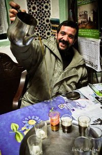
Tomando el té con Nourdin, el dueño de la pensión donde nos alojamos
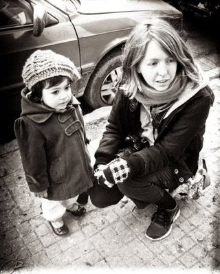
Me hice amiga de una nenita en la calle y, cuando me dio un beso en el cachete, me dieron ganas de secuestrarla y llevármela en la mochila por el mundo.
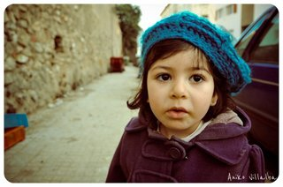
Una de las tantas fotos que le saqué.
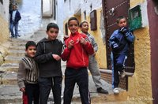
Un grupo de chicos que se divirtió posando para nuestras cámaras.
Todo empezó cuando nos sentamos a descansar en un banquito a unas diez cuadras de la estación de buses de Tetouan y se nos acercó un tal Mohammed —aprovecho para comentarles que está estadísticamente comprobado que Mohammed es el nombre más común del mundo— para ofrecernos lo de siempre: alojamiento, comida, tours, kif o todo lo anterior combinado. Nos habíamos tomado el bus local de Tanger a Tetouan (a una hora de distancia) y habíamos llegado a una ciudad de la que sabíamos muy poco: que tenía una mezcla arquitectónica árabe y andaluza, que era poco turística y que tenía una de las medinas (cascos históricos o ciudades árabes antiguas) mejor preservadas de Marruecos.
Mohammed nos ofreció galletitas y nos hizo el cuestionamiento de siempre (De dónde son, De qué parte de Argentina, Hace cuánto están en Marruecos, Primera vez que vienen a Tetouan), seguido del clásico: “Mi abuela tiene una pensión en la medina. Muy limpia, muy barata. Los llevo. 100 dirham por los dos”. Le dijimos que si nos la dejaba por 40 dirham (€ 4) cada uno iríamos, pero no dio el brazo a torcer. Nos propuso que si nos quedábamos ahí, “en lo de su abuela” (a la cual jamás vimos ni en figuritas), él nos haría un pequeño tour por la medina más tarde completamente gratis (subrayo lo de “gratis” porque fue algo que repitió varias veces). Como no teníamos alojamiento reservado de antemano y no sabíamos muy bien cómo llegar caminando a la medina, decidimos seguirlo para ver “la pensión de su abuela”. Caminamos cuesta arriba hasta la Plaza Real, cruzamos uno de los arcos de entrada a la medina y llegamos a una típica casa árabe/andaluza del año 1600. Nos quedamos.
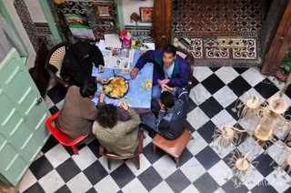
Nuestro primer almuerzo “comunitario” en la pensión
Era hora de almorzar y Nourdin, el dueño de la casa (a quien luego apodaríamos “Bravo” por su efusividad y su repetición constante de la palabra “bravooo” cada vez que hacíamos o decíamos algo) nos invitó a sentarnos con ellos a comer couscous. En la mesa conocimos a Canario (un hombre de unos 70 años que dedicó su vida a preparar café y era conocido por su voz cantante), a Fátima (mujer de la casa) y a su hijo Jafar. Tomamos un té de bienvenida y salimos con Mohammed a recorrer el laberinto blanco: la medina, esa ciudad dentro de la ciudad.
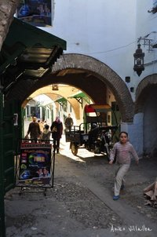
Algunas imágenes de la medina por dentro
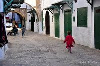
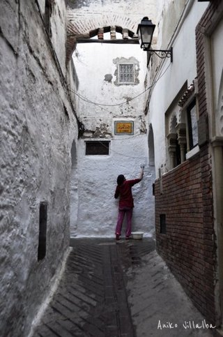
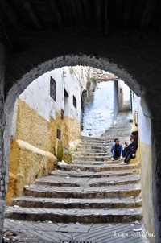
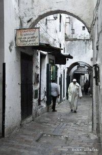
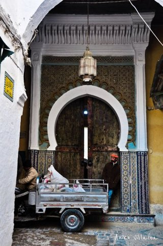
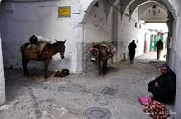
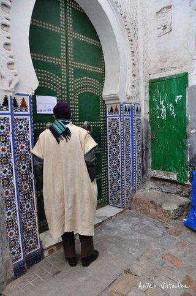
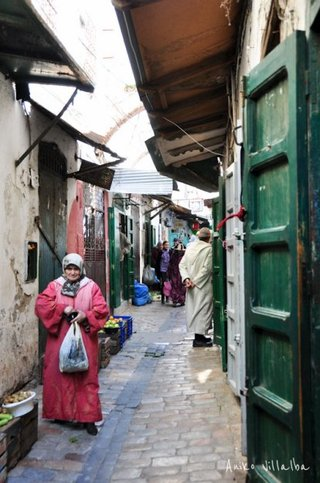
Para un recién llegado (en este caso, dos) sin experiencia en medinas (estas mini-ciudades árabes antiguas que existen en la mayoría de las ciudades marroquíes), orientarse en uno de estos lugares es casi imposible. Las calles forman todas esas letras curvas y sinuosas —eses, ces, jotas— que incentivan a cualquiera a perderse; dentro del laberinto hay escaleras, arcos, pasadizos, cuadrados centrales, rincones, recovecos, huequitos. Las calles, además de ser angostísimas, nunca están despejadas: hay puestos de venta, personas apoyadas, trabajadores sentados en el frente de sus locales, hombres cortando madera, hombres pintando cuero, mujeres vendiendo frutas, chicos jugando a la pelota, musulmanes caminando hacia alguna de las tantas mezquitas para el rezo, gatos buscando comida, gallos sueltos. Las fachadas de las casas están pintadas de colores pasteles y contrastan a la perfección con la ropa brillante de las mujeres. Hay movimiento a toda hora, un ir y venir constante de gente, ruidos, música, gritos de los niños, conversaciones entre vecinas, ofertas en los mercados, el llamado de las mezquitas. Donde no hay color, hay carteles. Donde no hay ruido, hay graffitis que gritan en árabe.
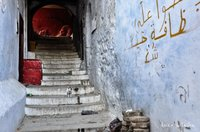
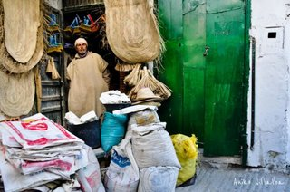
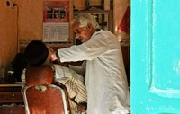
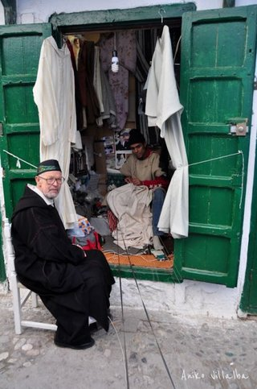
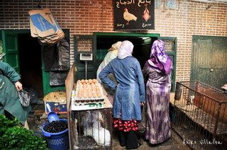
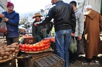
Según nos explicó Mohammed, la medina está subdividida en “barrios” o sectores, cada cual con su propia mezquita, su escuela y sus mercados. Pero los mercados, además, están organizados por rubro: en un sector está el mercado de madera, en otro el de cuero, más allá el de productos de cocina, por ahí el de animales, más adentro el de frutas y verduras, bajo techo el de “snacks” y dulces, en otro rincón el de ropa y alfombras, en el centro el de especias y desparramados por ahí los puestos de hierbas medicinales y café. El ritmo de vida de las personas parece estar marcado por esta vida callejera de los mercados; en la medina de Tetouan cada cual tiene su oficio y lo realiza todos los días incansablemente en beneficio de su comunidad. Eso fue lo que sentí ahí adentro: un ambiente comunitario donde todos trabajan en pos de mantener a esa pequeña sociedad en pie.
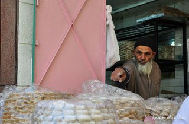
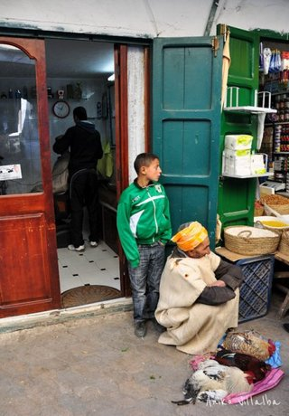
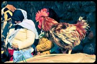
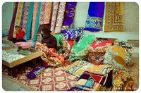
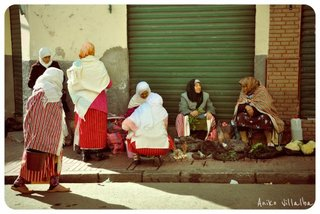
En invierno, cuando baja el sol, el aire de la medina se vuelve casi helado y los pies y las manos empiezan a congelarse. Así que antes de que oscureciera, Mohammed nos llevó a la salida de la medina y a caminar cuesta arriba para ver la ciudad desde otro ángulo. Ahí fue cuando se puso pesado: “Amigos, ya que perdí (sic) tres horas con ustedes, denme 10 euros para mis niños”. Como habíamos quedado en que el paseo por la medina era gratis, la actitud nos molestó (por lo menos a mí). Nos presionó de tal manera (con oferta de droga a cambio y todo) que finalmente le dimos 50 dirham (€ 5) entre los dos para que se fuera, porque no quería dejarnos solos hasta que no le pagáramos. No volvimos a ver a Mohammed durante nuestra estadía en Tetouan. Y si eso empañó un poco el día, todo lo que vino después lo “desempañó” de sobremanera.
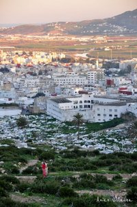
Durante nuestra estadía en la pensión, Nourdin (“Bravo”) nos invitó a tomar por lo menos veinte tés de hierbas. También nos dio clases de homeopatía, su especialidad, y nos enseñó las propiedades curativas de las ocho plantas con las que prepara su té. Nos invitó a comer tajine y cous cous (platos típicos de acá) con él, Fátima, Canario y Jafar del mismo plato “como hermanos”. Nos transmitió enseñanzas acerca de la vida (con frases como “Mi tierra es donde me siento bien”, “Sin esperanza la vida será corta” y “Si no tienes nada que dar al pobre, dale una sonrisa”). Nos mostró lo arraigado que están en su cultura la hospitalidad y el compartir (ya sea con la familia o con extraños). Nos mostró fotos de su país y nos pidió que le mostráramos fotos de nuestros viajes. Nos sorprendió con su conocimiento de varios idiomas (acá pareciera que todos hablan árabe, español, francés e inglés) y de varias culturas. Nos enseñó palabras y expresiones en árabe. Nos festejó todo lo que decíamos con una sonrisa y un “bravooo”. Me apodó “reina” (y, cada vez que tomamos té, brindamos con un “¡Larga vida a la reina! ¡Bravooo!”) y, antes de irme, me regaló un djellaba (la vestimenta típica de los marroquíes) para protegerme del frío.
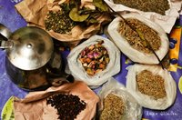
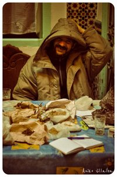
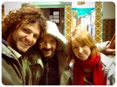
Durante nuestra breve estadía, nos dio la bienvenida a su mundo. Y ahora, mirando hacia atrás, entiendo que caímos “en paracaídas” en un lugar que tiene un ritmo que existe hace siglos, un lugar donde la vida incluye tés de hierba, platos de comida que se comen con la mano y entre todos, pipas que se fuman en cada esquina, mercados que se arman y se desarman todos los días y Mohammeds que buscan ganar algo de dinero como sea. Y si aquel Mohammed en particular me hizo preguntarme hasta qué punto confiar en los marroquíes, Nourdin nos demostró que para muchas personas el intercambio más ansiado con el viajero no es el monetario, sino el humano, el de la experiencia, el de la transmisión de conocimientos. Así como el viajero busca conectar con la cultura a la que llega, el local también busca conectar con el que viene de lejos. Cuando eso sucede, nace lo auténtico y, personalmente, no puedo pedir nada más.
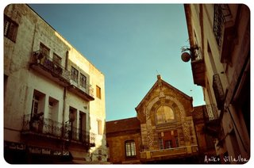
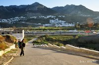
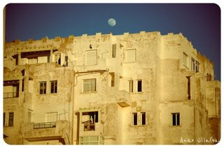
Datos útiles y consejos para visitar Tetouan:
- La medina de Tetouan es Patrimonio de la Humanidad por la Unesco y una de esas joyitas inexploradas… Mi consejo: no se la pierdan.
-
Bus de Tanger a Tetouan: 13.50 dirham, una hora (€ 1.20)
-
Alojamiento en la medina de Tetuan: 100 dirham por habitación privada (€ 10) (si regatean más se consigue hasta por 60 dirham para dos personas). Por si quieren quedarse en lo de Nourdin, esta es la info: Hotel Afrika, Plaza Palacio Real, Calle Kaid Ahmed 17.
-
Sandwich: entre 6 y 20 dirham (según el tamaño y los ingredientes)
-
Dulces: 2 dirham por unidad
-
Bus de Tetouan a Chefchaouen: 15 dirham (una hora y media de viaje)
- Pueden ver + fotos de Tetouan acá
Una dosis de Andalucía (o: Voy a Marruecos y vuelvo)
Thu, 02 Feb 2012 22:09:30 +0000
Pasaron exactamente dos meses desde que aterricé en Madrid. Dos meses de estar en Europa por primera vez en mi vida. Dos meses de estar en un país lejano —por eso de que hay que cruzar todo un océano— y cercano a la vez —por eso de que la cultura es muy parecida a la [...]
Pasaron exactamente dos meses desde que aterricé en Madrid. Dos meses de estar en Europa por primera vez en mi vida. Dos meses de estar en un país lejano —por eso de que hay que cruzar todo un océano— y cercano a la vez —por eso de que la cultura es muy parecida a la nuestra—. “El Plan” era estar en Marruecos en enero pero, como decimos en Argentina, “colgué”. Colgué y me quedé en Barcelona mucho más de lo que pensaba, colgué y me quedé “un día más” varias veces en varios lugares. Me acostumbré tanto a estar acá que por un lado no me quiero ir, aunque por otro Marruecos me espera. Y después, España me espera otra vez.
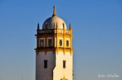
Sevilla
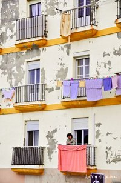Cádiz
España me gusta mucho. Tanto, que me pasa eso que siempre me ocurre cuando llego a un lugar al que sé —o por lo menos supongo— que voy a volver: no voy a “todos lados” y me justifico mentalmente con el “tal ciudad/pueblo lo dejo para la próxima”. ¿Estará bien pensar así? ¿O lo mejor será ver todo lo posible en un solo viaje, siguiendo la filosofía del carpe diem viajero? Yo creo que voy a volver, pero ¿y si mañana me sale una propuesta para irme a Micronesia y me quedo allá? ¿Habrá que serle fiel al “No dejes para mañana lo que puedes viajar hoy”? Bueno, la cosa es que ya me voy de España y no vi ni la mitad. Aunque, si lo pienso así, viajé mucho pero no vi ni la mitad de nada. El mundo es inabarcable y hay que elegir. Pero en este caso, como les digo, volveré. Además tengo una excusa: quiero conocer mucho más de Andalucía, una región de la que me vienen hablando hace tiempo.
Llegamos (con Andi —alias El Sireno—, bloggero de viajes a quien presenté en el post anterior y con quien viajaré a Marruecos) a la casa de mi amiga Noelia en Jerez el jueves pasado y, con solo caminar por la calle, ya sentí un aire distinto. Para empezar, me encanta cómo hablan acá. Mushasha, rebaná de pan, andalú, musho. Lo primero que me dijo Víctor, el novio de mi amiga, es que yo “hablo flojito” (bajito). No, es que acá hablan fuerte. Voy por la calle y me entero de tó. Voy en el tren y me tiento escuchando la risa contagiosa de cuatro mujeres que se la pasan todo el trayecto divertidas. Voy en el bus y me río escuchando la conversación telefónica de una chica que le dice a la mamá “que no sea gilipollas”. Voy a cenar a un bar y me entretengo con las discusiones futboleras acaloradas (¡que no fue penal! ¡que sí, joder!). Sería un pecado caminar por Andalucía escuchando música. Me perdería lo mejor.
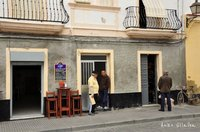
Barcito en Cádiz
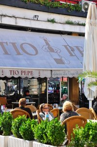
Jerez
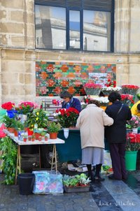
Mercado de flores en Jerez
El viernes nos fuimos a pasar el día a Cádiz, a 45 minutos en tren de Jerez. Qué lugar. Un día es demasiado poco. No sé si a alguno le pasó, pero por momentos me sentí en alguna calle del Centro Histórico de Cartagena de Indias (Colombia). No digo que sean iguales porque, para empezar, en Cádiz es invierno y en Cartagena siempre hace calor. Además el centro histórico de Cartagena está restaurado y Cádiz, en cambio, luce con orgullo sus paredes despintadas y descascaradas (que, personalmente, me encantan). Pero durante un rato sentí un ambiente muy “caribeño” de vida al aire libre, un ajetreo callejero con vendedores en cada esquina gritando ¡el kilo a eurooo!, con mujeres cargando productos en la cabeza, con gente entrando y saliendo aceleradamente de los mercados. Y ese olor a mar que se siente desde cualquier parte, esa sal en el aire que delata que, muy cerca, hay un océano.
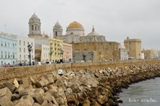
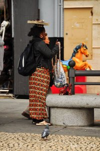
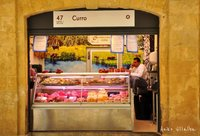
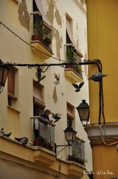
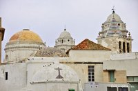
Caminamos toda la mañana por la zona antigua de Cádiz, nos perdimos entre las callecitas angostas y, a eso de la 1 del mediodía —temprano para el horario español de alimentación— entramos a un supermercado, compramos pan fresco y fiambres y nos hicimos unos sandwiches en un banco de la Plaza de las Flores (el almuerzo del mochilero low cost). A nuestro alrededor, todo era movimiento: mujeres que pasaban con sus carritos de compras, gente que entraba y salía de la oficina de correos, perros que corrían, palomas que volaban, flores que se vendían. Cuando terminamos de comer, descansamos un rato (o, término que acuñó Andi en su blog: trancaroleamos) y salimos a caminar otra vez, con ganas de ver toda esa gente y toda esa vida que habíamos experimentado por la mañana. Pero oh sorpresa: las calles estaban vacías. Entre las 2 y las 5 de la tarde lo único que vimos fueron locales cerrados (con persianas bajas y todo), alguna que otra mujer paseando al perro, algún que otro hombre cargando bolsas, algún que otro extranjero caminando por ahí y un grupo de viajeros hippies haciendo acrobacias y música frente a la inmensa Catedral. Acá el horario de siesta es sagrado y a mí todavía me resulta increíble cómo se respeta a rajatabla. Me parece genial que todo un país se ponga de acuerdo para irse a dormir y para después levantarse y seguir como si nada. Falta un altoparlante con ruido de alarma para despertarlos a todos.
Antes de la siesta…
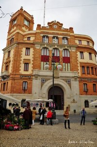
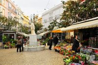
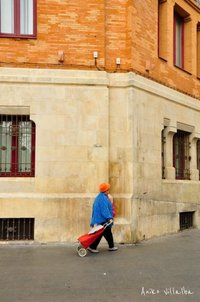
… y durante la siesta 
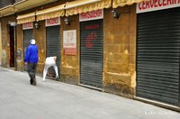
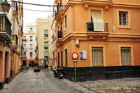
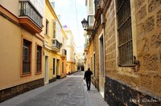
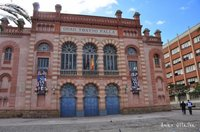
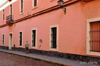
Conclusión:
El sábado nos fuimos a Sevilla. No estaba en nuestros planes (hace días que estamos diciendo, “Vamos ya a Marruecos y cuando volvamos visitamos tal lugar de España”), pero al parecer había una fiesta de despedida de dos chicas alemanas amigas de Andi que están de Erasmus —¡todo el mundo está de Erasmus acá! (algo así como de intercambio universitario en otro país de Europa)— en Sevilla, así que fuimos a la fiesta y terminamos quedándonos tres días. Llegamos de noche y yo ya iba embobada desde la ventana del bus: ¡qué arquitectura por favor! Qué lindas que son las formas árabes, los detalles curvos, las ventanitas, los colores. Qué lindo ir caminando entre todos esos balcones y escuchar que, por alguna ventana, se escapan canciones de flamenco. Qué lindos los naranjos que adornan, en fila, toda la ciudad. Aprovecho para preguntar: ¿Cómo es el tema de los naranjos acá? Están por todos lados, pero no vi a nadie sacando naranjas de los árboles. ¿Queda mal que me lleve algunas para comer más tarde?
Me gusta mucho la simpatía de la gente hacia los desconocidos, me gusta que respondan al pedido de indicaciones e incluso agreguen más información y datos de color; me gusta verlos reunidos en las cervecerías, en los parques, al aire libre; me gusta que Sevilla sea una ciudad de bicicletas y me gustan, sobre todo, las intervenciones artísticas que tienen los tachos de basura, las paredes, los carteles y las señales de tráfico. Podría decirles que visiten Plaza España, el barrio de Triana, la Catedral, el barrio de Santa Cruz y sus callejuelas, el Centro… pero creo que el mejor consejo que puedo darles a la hora de viajar es piérdanse, caminen sin mapa —guárdenlo en el bolsillo por si acaso—, pero sigan su instinto, déjense llevar por la ciudad o el pueblo que visiten. Y si necesitan indicaciones, pregunten. En ningún lugar del mundo me negaron una indicación; muchas veces me dijeron cualquier cosa, pero es otra buena excusa para hablar con más gente o para perderse un ratito más por ahí.

Jerez, Cadiz y Sevilla fueron mi pequeña y primera dosis de Andalucía, zona que quiero seguir recorriendo. Pero ahora sí, basta de seguir estirándolo. Mi mamá me informa vía mail urgente que se viene una ola de frío polar a España así que huimos a África ya mismo. Cuando ustedes lean esto, nosotros ya habremos cruzado el estrecho y estaremos aprendiendo los códigos de un país nuevo: Marruecos.
[Pueden ver más fotos de Andalucía y del resto del país en la Galería de fotos de España]
Despedidas, bienvenidas y reencuentros
Thu, 26 Jan 2012 22:55:26 +0000
La escritura de viajes es, en mi opinión, una de las más personales. No me refiero a la redacción de guías de viaje ni a las recomendaciones de atractivos turísticos para visitar, sino a la transmisión de experiencias, sentimientos y vivencias del viaje en sí. Viajar es algo que nos involucra de pies a cabeza [...]
Mis cuadernos en este viaje
I. Despedidas
La escritura de viajes es, en mi opinión, una de las más personales. No me refiero a la redacción de guías de viaje ni a las recomendaciones de atractivos turísticos para visitar, sino a la transmisión de experiencias, sentimientos y vivencias del viaje en sí. Viajar es algo que nos involucra de pies a cabeza y, así como cada uno vive un viaje a su manera, cada cual lo relata de forma distinta. Es imposible hacer escritura de viajes sin hablar de uno mismo ya que es imposible separar al sujeto que viaja del viaje en sí: ambos están ligados y uno no puede existir sin el otro. Por eso, al escribir sobre viajes, no se escribe solamente acerca de un lugar, sino acerca de lo que ese lugar le genera a quien lo visita.
Garraf, una playa de Catalunya
Uno de los dilemas con los que me enfrento cada vez que escribo un post es decidir hasta dónde contar, qué límite poner entre “lo anecdótico” y “lo personal”, qué tanto abrirme hacia quien me lee y contar, más allá del relato en sí, lo que siento mientras voy viajando.
Hace tiempo empecé a leer el blog de NomadicMatt, un estadounidense que está viajando por el mundo hace más de cinco años. En su página hay muchísima información: guías de países, datos útiles, ebooks y consejos para ahorrar al viajar… pero los posts más populares —y con los que yo personalmente me siento más identificada y que no me canso de releer— son los que hablan acerca de lo que él siente como viajero. En esos textos aborda temas como la depresión después de (o durante) un viaje largo, el amor y desamor en la ruta, la soledad, el agotamiento que siente después de viajar durante tanto tiempo, las reacciones de sus conocidos cuando anunció que se iba a dedicar a viajar, las reacciones de sus conocidos cada vez que vuelve de un viaje, la facilidad/dificultad de mantener los vínculos, el ciclo de cansancio y “re-enamoramiento” del viajar, la necesidad que siente de echar raíces e, incluso, su decisión de dejar de viajar por un tiempo. Son los textos que, al fin y al cabo, lo humanizan y permiten a los lectores relacionarse con él como persona. Y a mí me demuestran que no soy la única que pasa por ciertos procesos y estados de ánimo.
(Mientras tanto, algunas fotos de mis últimos días en Barcelona)
Yo, por el momento, no tengo pensado dejar de viajar, pero cuanto más viajo hay algo que se me hace cada vez más difícil: despedirme de las personas que me voy cruzando en el camino. Visto desde afuera, vivir viajando es una vida ideal. Sí y no. Para mí lo es porque es algo que soñé desde muy chica y lo estoy cumpliendo, y no me veo haciendo otra cosa que no sea esto. Pero a la vez, en estos ¡cuatro años! que llevo viajando, aprendí que es un modo de vida que requiere mucha fortaleza. Cuanto más viajo más aprendo a conectar con la gente. Cuanto más conecto, más me encariño. Cuanto más me encariño, más me cuesta despedirme. Tengo amig@s muy especiales en muchísimas partes del mundo, y no sé si volveré a verlos. Tengo muchos rincones del mundo en los que quisiera quedarme para siempre, y no sé si volveré a pisarlos. Cada vez que me voy de algún lugar o me despido de una persona, es como si un pedacito mío quedara ahí. Pero a la vez, entiendo que viajar implica el movimiento constante y que ser viajero implica relacionarse con las personas, aprender algo de cada vínculo, despedirse y guardar cada momento como un recuerdo feliz.
En abril de 2010, cuando estaba en el aeropuerto de Frankfurt esperando a que saliera mi vuelo a Bangkok, conocí a un marroquí-canadiense que me dijo algo que me quedó grabado: “La vida es como un aeropuerto. Gente de distintas partes del mundo se encuentra en el mismo lugar por un rato y después cada cual toma un avión distinto y sigue su camino”. Y, dicho esto, él tomó su vuelo y yo el mío y nunca más nos volvimos a ver. Es cierto: la VIDA es así, también está llena de despedidas. La única diferencia es que, al viajar, estas despedidas ocurren con mucha más frecuencia.
Pero lo bueno de ser viajer@ es que las despedidas siempre serán un hasta pronto.
La vida, también, es un laberinto: cada cual toma su camino y todos se cruzan en algún momento del trayecto…
Y si hay que saltar, saltá.
II. Bienvenidas y reencuentros
Todo esto para contarles que, después de 25 días, finalmente me fui de Barcelona, mi ciudad ideal. Fue difícil dejarla, ya que sentí una enorme conexión con ella y su gente, pero lo hice sabiendo que, tarde o temprano, voy a volver. Y, quién sabe, tal vez algún día haga base ahí.
Viajé unas 16 horas en dos buses y llegué a Jerez de la Frontera, en la provincia de Cádiz, Andalucía. ¿Por qué a Jerez? Porque vine a reencontrarme con Noelia, una amiga argentina a la que no veía hacía más de diez años. Hace unos días me contactó por medio de mi blog, me contó que estaba viviendo en España y me invitó a su casa. Y acá estoy y es como si los diez años no hubiesen pasado. Siento con ella la misma sensación de familiaridad que siento con España.
¡Hola Andalucía!

Desde que llegué a España, más que viajar, lo que estoy haciendo es reencontrarme con (y, en algunos casos, conocer en persona a) amigos (argentinos, españoles) y familiares en distintas partes del país. A cada ciudad de España que viajé fui para ver a alguien, porque sabía que alguien me esperaba. Por eso me tomé mi tiempo en cada lugar y me salteé ciertas regiones. Esto es algo que nunca me pasó en ningún país y que hace que este viaje sea tan distinto y especial.
Graffiti visto en El Raval (Barcelona)
Aprovecho para contarles mis planes viajeros y para darle la bienvenida a un nuevo compañero de aventuras. En pocos días parto rumbo a Marruecos con Andi, viajero argentino y autor del blog TrancaroLa poR el muNdo. Él está viajando hace más de un año por Asia y Europa; los dos coincidimos en España y dijimos, “Che, ¿vamos juntos a Marruecos?”, “Y daaaale”. Así que durante las próximas semanas contarán con la presencia de Andi en mis relatos. Según me dijeron, es bueno tener guardaespaldas en Marruecos, así que esperemos que no me cambie por un par de camellos.
A pedido de él, su foto posando cual sireno en la estación de metro de Barcelona
Después de Marruecos quiero conocer el resto de Andalucía. Y después… hay varias opciones, pero las contaré más adelante. Me surgieron algunas propuestas interesantes en Buenos Aires, así que todo es posible. Pero no daré más información hasta no tener certezas.
Dalí y El Pueblo de los Gatos (Parte 1 de 2)
Fri, 20 Jan 2012 18:14:09 +0000
Parte 1: Con ojos de Dalí Estoy con insomnio. Yo digo que es el café, otros me dicen que estaré pensando demasiado, otros me dicen que los argentinos, por naturaleza, nos enroscamos mucho con todo. Yo voy a hacer de cuenta que es el café y ya está. Así que ayer aproveché esta epidemia de insomnio [...]
Parte 1: Con ojos de Dalí
Estoy con insomnio. Yo digo que es el café, otros me dicen que estaré pensando demasiado, otros me dicen que los argentinos, por naturaleza, nos enroscamos mucho con todo. Yo voy a hacer de cuenta que es el café y ya está. Así que ayer aproveché esta epidemia de insomnio —que quién sabe quién o qué la habrá traído— para despertarme bien temprano (algo que en esta ciudad se complica) y alejarme de Barcelona por unas horas. Me tomé el tren —cómo me gusta tomar trenes— y me fui a Figueres, un municipio de Girona (Catalunya), a 117 km de Barcelona y muy cerca de la frontera con Francia.
Los vagones iban casi vacíos, se ve que en invierno el que no tiene alguna razón para salir, no sale. Miré la pantalla con la información del viaje: mientras la velocidad del tren aumentaba, la temperatura exterior se desplomaba. 12ºC… al rato 9ºC… dos estaciones después 5ºC… una hora después 2ºC. Finalmente llegué a Figueres con la módica suma de un grado centígrado. Qué lindo el frío. Lo primero que averigüé en la estación era a qué hora salían (y volvían) los buses a Cadaqués, un pueblito de la Costa Brava que mucha gente me recomendó visitar. “El próximo sale de aquí a la 1.45 del mediodía y el último vuelve de Cadaques a las 6.15 de la tarde”. Perfecto, tenía tiempo de sobra.
Caminé por Figueres siguiendo los carteles. Lo bueno de España —¿supongo que será así en el resto de Europa?— es que todo está perfectamente señalizado y es muy fácil llegar a los principales “atractivos” del lugar. Aunque, visto de otra manera, lo malo de España es que todo está señalizado y eso disminuye las posibilidades de (o las excusas para) interactuar con la gente local y pedirles indicaciones. Pero, de vez en cuando, yo lo hago igual. Seguí las flechas y mi instinto y llegué al lugar por el que fui a visitar Figueres: el Teatro-Museo de Salvador Dalí.
El Museo fue construido sobre las ruinas del antiguo teatro de Figueres y es una obra en sí: Dalí convirtió el edificio en un mundo surrealista con reglas propias y creó una realidad distinta donde conviven cuadros, esculturas, instalaciones, dibujos, bocetos, objetos, murales, huevos, choclos, gallinas, mujeres, coches… Es la mente de Dalí, con todos sus recovecos, plasmada en un edificio.
Sin haberlo planeado, elegí el día ideal para visitarlo: en la entrada me encontré con un grupo de 30 niños de unos siete años con sus maestros de colegio. Si nosotros, “adultos”, nos maravillamos ante la imaginación y la inventiva de Dalí, imaginen la reacción de un niño. Ahora imaginen la reacción de 30 niños juntos. Cada vez que entraban a una sala miraban para todos lados y decían “UAAAAU” con la boca abierta mientras señalaban cada detalle emocionados. Yo intentaba seguir sus miradas para ver qué era lo que los maravillaba tanto: si un color, un objeto, un mueble, una forma, un dibujo.

Y pensé en algo que me vengo repitiendo hace tiempo. Así es como tenemos que mirar el mundo, estemos donde estemos: como cuando éramos chicos. Con sorpresa, con admiración, con curiosidad, con imaginación. Cuando dejamos de mirar el mundo como niños damos todo por sentado, aceptamos que nuestra realidad es “lo normal”, que el mundo “es así”, y nos dejamos arrastrar por la rutina, creyendo que ese es el camino que tenemos que seguir porque “alguien” lo decidió así. Cuando somos chicos, en cambio, todo nos sorprende, cada objeto y cada lugar nuevo contiene un mundo en sí mismo, y para todo usamos el juego. ¿Dónde queda el juego cuando crecemos? ¿Por qué dejamos de jugar?
Para visitar el Museo de Dalí hay que estar dispuesto a entregarse a sus reglas y, sobre todo, a jugar. No importa la edad, nadie nos pedirá ser menores de 12 años para divertirnos. Adentro de ese teatro, la realidad es otra. Una realidad imaginada que podría ser real, por qué no. O, más bien, una realidad que un ser humano imaginó y convirtió en algo tangible. Si está ahí es porque existe, aunque sea solamente en un rincón de un pueblo de Catalunya.
Después de unas horas salí del Museo y caminé por Figueres en busca de comida barata. Mi bolsillo se niega a desembolsar 10 euros por un almuerzo, así que fui en busca de un bocadillo (sandwich) barato (encontré uno por 2 euros) y compré algo de fruta en un mercado callejero. A la 1.45 del mediodía tomé el bus a Cadaqués y me fui, semidormida, rumbo al Pueblo de los Gatos.
Continuará…
Viajar / Vivir (o Por qué me cuesta tanto escribir acerca de Barcelona)
Sun, 08 Jan 2012 17:01:41 +0000
Tengo un problema con Barcelona: me gusta demasiado. Y cuando algo me gusta demasiado, me cuesta escribir al respecto porque pierdo completamente la objetividad. Cuando un lugar me atrapa no soy capaz de distanciarme y mirarlo de lejos: me meto tan adentro que me cuesta hablar de él. Y así estoy ahora, hace una semana en [...]
Tengo un problema con Barcelona: me gusta demasiado. Y cuando algo me gusta demasiado, me cuesta escribir al respecto porque pierdo completamente la objetividad. Cuando un lugar me atrapa no soy capaz de distanciarme y mirarlo de lejos: me meto tan adentro que me cuesta hablar de él. Y así estoy ahora, hace una semana en Barcelona e incapaz de escribir sobre ella.
Podría contarles que volví a Barcelona (después de mi primera visita hace unas dos semanas) la noche de Año Nuevo. Vine con Dafne desde Calella (el pueblo donde nos estábamos quedando) sin plan, sin rumbo, con un objetivo: dejarnos llevar por la ciudad. Si bien acá es invierno, esa noche no hizo frío y toda la gente estaba en la calle. Llegamos a las 11 de la noche, nos bajamos del tren en Plaza de Catalunya y empezamos a caminar por las Ramblas hacia el mar. La marea de gente ocupaba todos los espacios vacíos, era difícil encontrar una calle donde no hubiera demasiadas personas. Rompimos la linea recta y nos metimos por el laberinto del Barrio Gótico (lugar al que siempre se me da por llamarle Ciudad Gótica), dimos vueltas y finalmente aparecimos en el mar.
Eran las once y cincuenta, faltaban diez minutos para que empezara el nuevo año. ¿Qué será lo que nos impulsa a festejar el fin de un año y el comienzo de otro? Si al fin y al cabo, el cambio de año es una medición humana que no cambia en nada nuestra vida. No es que si estamos tristes a las 11.59 del 31 de diciembre de 2011 pasaremos a ser felices a las 00.01 del 1 de enero de 2012. O tal vez sí. Yo no creo demasiado en las fechas ni en los calendarios, pero igualmente me gusta eso de festejar Año Nuevo y sentir que algo se cierra y empieza algo nuevo. Además pasé los últimos años nuevos en otros países —recibí el 2010 en un camping de Uruguay y el 2011 en una playa de Indonesia— así que me intrigaba saber cómo recibirían el 2012 en España.
Podría contarles que las calles de Barcelona en Año Nuevo se me asemejaron a un circo repleto de personajes que nos distraían a cada paso. Nosotras solamente nos dedicamos a caminar —de Plaza de Catalunya al puerto, del puerto a Barceloneta, de Barceloneta al Barrio Gótico, del Barrio Gótico al Raval—, pero íbamos tan en sintonía con la buena onda de la ciudad que a cada paso se nos sumaba alguien y compartíamos parte del trayecto. Así fue como miramos los fuegos artificiales desde el puerto con un grupo de marroquíes que nos hablaban en árabe, caminamos sin rumbo con un italiano y un japonés-brasilero bordeando el mar, esquivamos a los pakistaníes que constantemente se nos acercaban para vendernos latas de cerveza, espontáneamente nos unimos a las canciones que cantaba la gente que nos pasaba por al lado, compartimos unas papas fritas y un kebab en uno de los tantos puestos de comida rápida, nos cruzamos con personas andando en bicicleta, llegamos a una fiesta en una casa okupa del Raval y bailamos entre paredes pintadas y gente con pelucas de colores.
Podría contarles que los días siguientes caminé por el barrio de Gracia (que por momentos me recuerda a San Telmo), visité el Parque Guell (uno de los lugares más mágicos de la ciudad), subí a Montjuic y casi voy a ver un partido del Barca (pero después me dio fiaca y me acordé de que el fútbol me aburre bastante). Podría hablarles acerca de los precios de la ciudad —que los menúes no bajan de los 8 euros, que lo más barato es comerse un kebab o un bocadillo por 3 euros, que el metro cuesta 1.45 euros (pero que si sacás un billete de 10 viajes, pagás solamente 8 euros), que una cama en una habitación compartida de un hostel ronda los 10 euros, que entrar a los museos y a las obras de Gaudí puede destruir el presupuesto de cualquier viajero low cost—, podría hacer una reseña de la Fundación Miró, podría sugerirles que visiten el bar de Manu Chao, podría explicarles cómo llegar a la Plaza Real y dónde comprar ropa en oferta… ¿Pero les estaría diciendo algo acerca de la esencia de Barcelona? Es justamente la esencia de esta ciudad lo que me atrapa, pero cuando tengo que definirla o describirla, no me sale nada, quedo horas frente a la computadora sin poder escribir una palabra.
Muchas veces me preguntaron si, al viajar, tengo días muertos, días en los que no me pasa nada interesante, días en los que no hago nada, días en los que me tomo todo con tranquilidad, días en los que no me inspiro. Días de inacción, por así decirlo. Sí, esos días son parte de los viajes largos. Cuando hacemos un viaje por un tiempo determinado nos enfrentamos a los lugares con la urgencia de saber que en poco tiempo la travesía se termina. Queremos ver todo, condensar las experiencias, aprovechar el poco tiempo que tenemos. Esa es una de las cosas que me gusta de los viajes con fecha de vencimiento: que, por unos días, vivimos en otra realidad con otras reglas y lo hacemos con intensidad, sabiendo que dentro de poco volveremos a la rutina de siempre. Cuando hacemos un viaje largo, sin un final previsto, el viajar se convierte en “vivir” y, por lo menos en mi caso, hay días en los que me bajoneo, hay días en los que me planteo muchas cosas y hay días en los que no hago nada productivo. Son días en los que, más que “viajar”, me dedico a vivir.
Es lo que me está pasando en Barcelona. Si me baso en los hechos, tal vez no hice demasiado durante esta semana, pero sin embargo siento que estoy viviendo la ciudad, que la estoy conociendo de a poco, que estoy tratando de descifrar qué es lo que me hace estar así de encantada con ella. Será su multiculturalidad, será que cada calle parece una obra de arte, serán sus laberintos, serán sus influencias africanas y árabes, será su música, será su vida callejera, será su mar, será su gente, será que siento que encajo bien. No lo sé, voy de a poco, viviendo el día a día con tranquilidad, y es por eso que me cuesta tanto escribir acerca de esta Ciudad Ideal.
Lotería
Thu, 29 Dec 2011 15:40:18 +0000
Desde chica me gustó ilar hechos hacia atrás, tal vez porque siempre creí en ese cliché de que todo pasa por algo. “Si no hubiese conocido a tal no me hubiese pasado tal cosa ni hubiese llegado a tal lugar ni hubiese conocido a…”. Me hace pensar que nuestra vida depende de una larguísima cadena de hechos (llámense casualidades) que hacen que nuestra existencia sea, en dos palabras, una lotería. [...]
“Aquella excursión por arándanos es lo más importante que ha sucedido en mi vida. Puede parecer algo extraño que lo más importante de mi vida sucediera más de treinta años antes de que yo naciera, pero si la abuela no hubiese pinchado aquel domingo, mi viejo no habría nacido. Y si él no hubiera nacido, yo tampoco hubiera tenido muchas posibilidades de existir.” (fragmento de “El misterio del solitario”, de Jostein Gaarder)
Desde chica me gustó ilar hechos hacia atrás, tal vez porque siempre creí en ese cliché de que todo pasa por algo. “Si no hubiese conocido a tal no me hubiese pasado tal cosa ni hubiese llegado a tal lugar ni hubiese conocido a…”. Me hace pensar que nuestra vida depende de una larguísima cadena de hechos (llámense casualidades) que hacen que nuestra existencia sea, en dos palabras, una lotería. Porque, si lo pensamos, hay dos cosas básicas de nuestra vida que no podemos elegir: en qué época nacer y en qué parte del mundo. Lo que toca, toca. Y lo que no toca, habrá que salir a conocerlo.
Como Cudillero, uno de los pueblitos mágicos de Asturias…
Yo nací en Buenos Aires después de una larguísima cadena de hechos en la que estuvo involucrada hasta la mismísima Segunda Guerra Mundial (digo, porque si nada de eso hubiese pasado, tal vez la familia de mi mamá se hubiese quedado en Europa y yo no tendría muchas chances de existir). Dentro de esta larguísima cadena de hechos, casualidades y causalidades que define mi vida, hay dos eslabones muy importantes que me unen al Viejo Continente: la familia de mi mamá es de Hungría y la de mi papá es de España. Entonces, si bien no había pisado Europa jamás en mi vida hasta hace menos de un mes, hay regiones de aquellos países que conozco de toda la vida. Es el caso de Asturias.
El Cabo de Peñas
Recuerdo que desde muy chica mi papá me hablaba de Asturias con nostalgia y orgullo. Asturias Patria Querida. La sidra asturiana. El hórreo. Las uvas en cada campanada de Nochevieja. La Virgen de Covadonga. La fabada. Noreña, Gijón, El Berrón y La Venta. Son palabras que tal vez para muchos argentinos no signifiquen nada, pero que siempre estuvieron muy ligadas a mi vida sin que yo me diera cuenta.
El pueblito de La Venta
La Fabada
Un hórreo asturiano
La sidra
La Virgen de Covadonga
¿Qué probabilidades hay de conocer asturianos en Asia? No lo sé, pero yo conocí a dos (Juan en Vietnam y Jaume en Laos) y enseguida me cayeron bien. De alguna manera, eso de pertenecer a un mismo lugar (ya sea de nacimiento o por descendencia) me generó simpatía hacia ellos. A los dos les dije lo mismo: “¡Yo tengo familia en Asturias! Aunque todavía no los conozco en persona, pero ya iré…”. Y finalmente, ese “ya iré” que venía repitiendo hacía tiempo se materializó: después de 26 años de tener familia en Asturias, vine a Asturias y los conocí en persona. Uno por uno, fui llenando de personalidad y significado esos nombres y caras que conocía por fotos, por cartas, por llamados telefónicos, por anécdotas…
Juli, Sarita y yo en Covadonga
La Venta
Las ovejas,
las cabras
y Woody Allen.
Me quedé una semana en Venta de Soto, un pueblito de no más de 30 casas, con mi familia asturiana. Festejamos Nochebuena con sidra casera y mucha (muchísima, con énfasis en lo de muchísima) comida y nos fuimos a pasear por los pueblos pesqueros, ciudades, cascos viejos, playas y parques naturales de Asturias. ¿Qué probabilidades hay de que en Asturias sea invierno y no llueva? Según me dijeron, muy pocas. Pero a mí me tocó un clima inaudito: casi siete días seguidos de sol y ni una nube (eso sí, un frío “¡que te cagas!”, al menos para mí).
Avilés
Tarna
El cementerio de Luarca
Luarca
El puerto de Luarca
Fútbol en Cudillero
 El museo de las anclas en Salinas
El museo de las anclas en Salinas
Los cubos de la memoria en Llanes
Vista desde Torimbia
¿Qué probabilidades hay de que todas las ciudades, pueblos, playas y rutas de Asturias estén vacías en esos días de sol invernal? Según me contaron, muy pocas. Pero alguien habrá avisado que llegué, porque todos los lugares que visitamos estaban vacíos, sin gente, con puertas y ventanas cerradas. Tan vacíos, que la frase célebre durante mi estadía fue: “Acá, normalmente, hay tanta gente que no se puede ni caminar, no entiendo qué pasó…”. Raros, para los asturianos, los días que pasé en Asturias fueron muy raros: mucho sol y nada de gente. Como sets de cine abandonados por vacaciones. ¿Será la crisis? ¿Será que en los feriados nadie sale de su casa? ¿O nos habremos transportado a un universo asturiano paralelo donde no había nadie más que nosotros? Para mí también fue raro ver todo vacío, con lo que me gusta la vida callejera, pero fue lindo también, ya que tuve los paisajes y pueblos de Asturias para mí.
Gijón
Lectora
En Cima de Villa, el casco antiguo de Gijón
Elogio del Horizonte
Calles vacías en Ribadesella
Y en Llanes
Ventanas cerradas en Cudillero
y nadie en las casas.
 Luarca vacía,
Luarca vacía,
Aviles también,
Y la cima de Oviedo también.
El día que me fui de Asturias, se largó a llover. Tal vez se llenó de gente también, y todo volvió a la normalidad. En este momento estoy en Calella (a una hora de Barcelona) otra vez, con un clima primaveral, lista para festejar Año Nuevo y los 200 post de Viajando por ahí (el próximo post será una edición especial número 200). Estoy feliz y nostálgica. Lo lindo de viajar es la gente que se conoce en el camino. Lo triste de viajar es tener que despedirse una y otra vez de todas esas personas. Y cuando se trata de la familia, es aún más difícil.
Dicen que uno no elige a su familia, pero probablemente en la lotería de la vida hay varios números arreglados para que nos crucemos con todas esas personas con las que estábamos destinadas a cruzarnos, aunque sea por unos días.
[Pueden ver todas las fotos de España acá: http://viajandoporahi.com/galeria-de-fotos-europa]
10 cosas para hacer en Barcelona
Wed, 21 Dec 2011 10:22:38 +0000
Este es un post invitado de Pol Comaposada, autor del blog de viajes Mundo-Nómada.com
La capital de Catalunya, Barcelona, es una ciudad llena de vida. Si la visitas, la disfrutarás más en verano (de mayo a septiembre) ya que con el calor se puede hacer más vida de calle y se aprovechan mejor sus playas. No obstante, en invierno también tiene su gracia [...]
Este es un post invitado de Pol Comaposada, autor del blog de viajes Mundo-Nómada.com
Pol es de Sabadell (al lado de Barcelona), viajó durante un año por Asia y Oceanía y decidió quedarse a vivir en Bangkok. En Mundo Nómada habla de sus viajes y de su vida en Tailandia, y da recomendaciones, datos y sugerencias para viajar por Asia. Y como nadie conoce mejor su propia ciudad que un local, Pol nos da 10 ideas para disfrutar de Barcelona. Yo (Aniko), por mi parte, ilustro esta pequeña guía con mis fotografías.
La capital de Catalunya, Barcelona, es una ciudad llena de vida. Si la visitas, la disfrutarás más en verano (de mayo a septiembre) ya que con el calor se puede hacer más vida de calle y se aprovechan mejor sus playas. No obstante, en invierno también tiene su gracia, sobre todo en diciembre y enero cuando sus calles se llenan de luces y de ambiente navideño. Las montañas de los Pirineos quedan a poco más de dos horas, vale la pena pues ir tanto en invierno (a esquiar) como en verano.
Ahí van 10 ideas de cosas que hacer en Barna:
1) La Plaça Catalunya y les Rambles
No puedes decir que has estado en Barcelona si no has paseado por la mítica calle de las Ramblas. Esta calle empieza en la Plaça Catalunya, la más importante de la ciudad, y baja hasta el monumento de Colón, cerca del mar. A ambos lados de la calle queda el barrio antiguo de Barcelona, Ciutat Vella.
Una de las atracciones favoritas para los turistas en las ramblas son las estatuas humanas, artistas que con disfraces extremadamente elaborados entretienen a los paseantes todos los días. También encontrarás tiendas de flores, kioskos, bares (caros), restaurantes, y muchos carteristas! Nadie os robará agresivamente pero cada día desaparecen carteras de turistas. Os recomiendo parar al bar Viena (al comienzo de la calle desde plaza Catalunya) y probar el bocadillo de jamón serrano.
2) El Mercat de la Boqueria y la Plaça Real
Encontraréis el Mercat de la Boqueria en la misma calle de las Ramblas. Es un mercado de frutas y verduras que poco a poco se ha ido convirtiendo en una atracción turística pero eso no ha evitado a las abuelitas seguir comprando allí como siempre. Es el mercado más grande de Catalunya y ofrece tanto productos locales como exóticos. La Plaça Real es una plaza de forma trapezoidal con una fuente en el medio. Está algo escondida al lado de las ramblas y es perfecta para salir de noche. Hay varios pubs interesantes.
3) Ciutat Vella: el Gòtic y el Raval
Ciutat Vella es el barrio antiguo de la ciudad y una de las razones por las que me encanta Barcelona. Las Ramblas cruzan este barrio y lo dividen en dos partes: el Gótico y el Raval. El Gótico (a la derecha bajando por las ramblas) es algo más turístico. Está formado por callejuelas que pueden parecer un laberinto. Es casi obligatorio perderse por estas calles al menos una vez en la vida. Si lo hacéis quizás terminéis encontrando la Plaça del Rei una pequeña plaza que os transportará a la Edad Media. ¡No ha cambiado nada desde entonces! En la otra parte del barrio, el Raval, viven muchos de los inmigrantes de la ciudad (sobre todo indios y paquistaníes). Es un barrio no tan cuidado como el gótico donde encontraréis muchos bares y restaurantes interesantes y a buen precio.
El barrio gótico
Peluquería de El Raval
4) Las playas
Barcelona cuenta con nueve playas. Son muy accesibles y se puede llegar tanto caminando como en el metro. Todas tienen servicios y suelen estar limpias. La más famosa es quizás la que está junto a los dos pequeños rascacielos de Barcelona, la platja de la Barceloneta. Enfrente de la playa hay varios buenos restaurantes donde comer una paella. De todas formas, si queréis buenas playas de verdad id a la costa brava, a una hora en coche hacia el norte de Barcelona.
5) El Parc de la Ciutadella
Es un parque bastante grande situado a 15 minutos andando desde el monumento de Colón. Hay bastante vegetación y un lago en el medio donde podéis alquilar la típica barquita. Es un sitio genial donde pasar las tardes y sobre todo los domingos, cuando cientos de jóvenes y no tan jóvenes se reúnen para hacer malabares. Allí también encontraréis, además del Zoo de Barcelona, el Palau del Parlament de Catalunya.
6) Montjuïc
Montjuïc es el pequeño monte de 184 m. delante del mar que se ve desde cualquier punto de la ciudad. Debe su nombre a los judíos que enterraban allí a sus muertos. Es un parque muy grande perfecto para explorar durante toda una mañana y llegar arriba del todo desde donde tendréis muy buenas vistas de la ciudad, sobre todo desde el castillo que hay en la cima.
7) El Barri de Gràcia
Este pequeño y antiguo barrio fue un pueblo antes de unirse completamente a Barcelona. Hoy en día es un lugar perfecto para salir a tomar unas copas con el ambiente quizás más auténtico de Catalunya. Allí encontraréis bares de copas con banderas independentistas al lado de kebabs de paquistaníes.
8 ) El Tibidabo
El monte del Tibidabo queda detrás de la ciudad separándola del resto de la provincia. Esta montaña de 516 metros tiene en su cima un pequeño parque de atracciones y una iglesia desde la que tendréis las mejores vistas de la ciudad. ¡Vale mucho la pena subir en un día asoleado! Os dejo con una explicación de cómo llegar a la cima.
9) La Sagrada Família y el Parc Güell
¿Ya conocéis a Antoni Gaudí? Si es que no, lo vais a conocer pronto en Barcelona. Gaudí ha sido el arquitecto más famoso de la ciudad y la mayoría de edificios emblemáticos fueron diseñados por él. Como por ejemplo, la Sagrada Familia, una catedral que empezó a construirse en 1881 y que se calcula que se terminará en el 2026. Esta catedral en construcción se ha convertido ya en el edificio más emblemático de Barcelona. Otra atracción turística diseñada por Gaudí es el parc Güell. Un gran jardín que se construyó entre el 1900 y el 1914 en el que veréis muchos detalles de la arquitectura modernista del admirado arquitecto.
La Sagrada Familia
Parc Güell
10) El Camp Nou
Sabiendo que la mayoría de los lectores de Viajando por Ahí son argentinos, no hace falta hablar mucho del estadio del Barça, puesto que en uno de los países en el que se juega el mejor fútbol, ya lo conoceréis de sobras. Solo decir que es el más grande de Europa con capacidad para casi 100.000 personas y que lo podéis visitar aunque no haya ningún partido. Por cierto, a los aficionados del Barcelona se los conoce como culés porque en el antiguo estadio del equipo, las gradas eran bastante sencillas y se veía el culo y la espalda de todos los aficionados cuando estaban sentados. Culo en catalán es cul y de aquí, culés.
Culés en la Rambla
ídem (el festejo siguió hasta la noche)
La mejor manera de moveros por la ciudad es sin duda la bicicleta, especialmente por la zona antigua de Ciutat Vella. Así que ya sabéis, tocará alquilar una tan solo pisar la ciudad. Si no os gustan las bicis siempre os quedará el metro.
+ info: Mundo-Nómada.com
Fotografías: Aniko Villalba
Instantáneas de un pueblito azul
Sat, 11 Feb 2012 13:03:56 +0000
Hay lugares que son especiales por algo: por sus templos (por ejemplo), por su comida, por su arquitectura, por su historia, por sus celebraciones, por su naturaleza. Y después está Chefchaouen, que es un pueblito de Marruecos famoso por su color: el azul. Chefchaouen tiene unos 45 mil habitantes, está ubicado en la ladera de [...]

Hay lugares que son especiales por algo: por sus templos (por ejemplo), por su comida, por su arquitectura, por su historia, por sus celebraciones, por su naturaleza. Y después está Chefchaouen, que es un pueblito de Marruecos famoso por su color: el azul.
Chefchaouen tiene unos 45 mil habitantes, está ubicado en la ladera de una montaña y está dividido en dos: la parte “moderna” y la medina. Pero la magia, como en todas las ciudades marroquíes que conocí hasta ahora, está en la medina. Aunque esta, a diferencia de la de Tanger, Tetouan y Fes (de la cual escribiré próximamente) es extremadamente silenciosa, inmóvil y tranquila. Podría decirse que es una medina tímida y relajada.

Chefchaouen (que significa “mira los picos”, por su cercanía a dos montañas) nació como base de las tribus berber en el siglo 15. A fines del 1400, el asentamiento creció gracias a la llegada de refugiados judíos y musulmanes de Granada. Ellos construyeron las casitas blancas de techos rojos, pero fueron los judíos quienes le dieron el toque azul a las paredes, allá por 1930.
No les voy a mentir: Chefchaouen es bastante turístico. Viendo lo encantador que es el lugar, es imposible que no lo sea, pero el acoso de los marroquíes que te ofrecen menúes, tatuajes de henna, artesanías y kif a casa paso, cansa. El sector más comercial es la plaza Uta el-Hammam, donde están concentrados los restaurantes “tradicionales” y los hombres que descansan al sol con su dejllabas. En las paredes de las calles aledañas hay filas de carteras, bolsos y zapatitos colgados en exposición, así como personas que intentarán venderte a todo momento.
Mi consejo: aléjense de las calles principales, caminen, suban y bajen escaleras, piérdanse entre las casitas azules y van a encontrar lo que realmente vale la pena: a los habitantes viviendo su rutina normalmente, sin poses ni intenciones de vender, vestidos (especialmente las mujeres) con ropas brillantes que contrastan con el azul lavado que los rodea. Van a ver a los nenes jugando a la pelota, a las mujeres charlando en las puertas, a las nenas reunidas en alguna escalera.
Varias personas me preguntaron cómo es la experiencia de viajar como mujer en Marruecos. Yo voy a todos lados con Andi (compañero de viajes y guardaespaldas), así que probablemente no se me acercan tanto como lo harían si estuviera sola. Hay muchos hombres que me miran y, cuando me pasan al lado, me susurran en árabe (no sé si el equivalente de ese susurro será “Se te cayó un pétalo, flor de las praderas” o “Ay mamita las cosas que te haría”, pero tampoco quiero saberlo). Conocimos a dos chicas que viajaban solas y nos dijeron que los marroquíes se les pegaban constantemente para ofrecerles, además de alojamiento, menúes, kif y demás productos, una que otra noche de amor (o, incluso, matrimonio).
Sin embargo, ser mujer viajera tiene sus ventajas. Cada vez que hago contacto visual con alguna marroquí, le sonrío. Y ella, a cambio, también me sonríe. Por unos segundos, hay una conexión en la que no se intercambian más que sonrisas, ese lenguaje que traspasa fronteras y no sabe de idiomas. Y cuando dos mujeres de dos culturas distintas se sonríen, no hay doble mensaje ni malentendidos de por medio (como sí podría ocurrir si le andara sonriendo a todos los hombres marroquíes que me cruzo). Hay, más bien, una complicidad. Un “podremos hablar idiomas diferentes y usar ropa distinta, pero en el fondo las dos somos mujeres y nos entendemos sin palabras”.

Una tarde, Andi me dejó sola y se fue a trancarolear (ver “El trancarolear y la santa doctrina trancarolense” para comprender de qué se trata esa acción, o más bien inacción, creada por mi co-equiper), así que me fui a caminar sola por la medina azul. Me crucé a un grupo de nenas que estaban jugando con una soga y me pidieron que les sacara una foto. Mientras estaba ahí, aparecieron tres chicas de mi edad, me saludaron y me preguntaron mi nombre. Una de ellas hablaba un poquito de inglés, otra hablaba algo de francés y la tercera solamente árabe. Enseguida me agarraron del brazo y me llevaron a caminar con ellas. Me sentí como en China, cuando tres chicas con las que casi no pude intercambiar palabra me adoptaron de compañera de viaje por dos días. Así que nos fuimos las cuatro cual buenas amigas y terminamos, como siempre, teniendo conversaciones en árabe y en español, sin entender lo que la otra decía, pero felices de estar compartiendo un trayecto del camino juntas.
Información útil para visitar Chefchaouen:
- Cambio (febrero 2011): 1 euro = 11 dirham
- Bus de Tetouan: 15 dirham (una hora y media de viaje)
- Alójense en la medina. Hay hostels por 50 dirham por persona en dormitorio compartido o habitaciones privadas para dos por 100-150 dirham en total.
- Los menúes en los restaurantes turísticos están alrededor de 50 dirham (entrada, plato principal, postre). Un desayuno, entre 20 y 25 dirham.
- Botella de agua de 1.5 L: 6 dirham
- Hamburguesa: 13 dirham
- Kebab: 18 dirham
- + fotos acá
Bautismo marroquí
Mon, 06 Feb 2012 01:14:08 +0000
La medina de Tanger Apenas cruzamos uno de los tantos arcos que hace de entrada a la medina (“ciudad vieja”) de Tanger (Marruecos) sentí que los cinco sentidos se me reactivaron de golpe, como si un viento fuerte me hubiese pegado de lleno en la cara y me hubiese despertado de un letargo. Me vi [...]
La medina de Tanger
Apenas cruzamos uno de los tantos arcos que hace de entrada a la medina (“ciudad vieja”) de Tanger (Marruecos) sentí que los cinco sentidos se me reactivaron de golpe, como si un viento fuerte me hubiese pegado de lleno en la cara y me hubiese despertado de un letargo. Me vi a mí misma de lejos, extranjera, con mochila, parada en medio del movimiento, la gente y los colores de una ciudad africana/árabe. En Tanger. En Marruecos. En África. EN ÁFRICA. Hacía menos de dos horas estábamos en España, en un pueblito con un ritmo muy tranquilo y un ambiente muy silencioso… y de repente bajamos del barco y caímos en una ciudad marroquí enloquecida, en un lugar que fue elegido por varios escritores de la generación Beatnik para vivir y para escribir y que inspiró obras literarias famosas como El cielo protector de Paul Bowles. ¿Qué los habría enamorado de Tanger? Pero, sobre todo, ¿cómo podía ser que dos mundos tan distintos estuvieran a tan pocos kilómetros de distancia?
Tarifa
Nuestra última parada en España fue Tarifa, pueblo portuario ubicado entre el Atlántico y el Mediterráneo, meca del windsurf y del kitsurf (por el viento, claramente) y uno de los puntos de cruce de Europa a África. Pasamos la noche ahí (había un sólo bus de Jerez a Tarifa y llegaba de noche) y la mañana siguiente recorrimos la parte histórica de Tarifa. Un pueblito lindo y tranquilo, con mucha construcción blanca, con mucho empedrado, con algunas personas sentadas en mesitas al sol, pero con nadie que nos mirara dos veces. Al mediodía nos fuimos caminando al puerto (todo queda cerca) y sacamos pasaje para el siguiente ferry a Tanger. 35 euros por un viaje de aproximadamente una hora, con mar picado y bolsita para el mareo —por si acaso— incluidas. Y antes de que nos diéramos cuenta, ya estábamos en el norte de África.
Gente simpática en Tarifa
El ferry
Marruecos es uno de esos países “polémicos” de los que me dijeron muchas cosas. Los que nunca viajaron a Marruecos me repitieron con voz de alerta: “Tené cuidado, mirá que eso no es Asia”, “No vayas sola, es peligroso”, “Marruecos es un país jodido (difícil)”. Los viajeros que ya estuvieron me aseguraron: “¡Te va a encantar!” (con miradas que denotaban envidia y ganas de volver), “Los marroquíes son muy hospitalarios y simpáticos” y “Te van a querer vender lo que sea y como sea, así que preparate para el acoso”. (Digresión necesaria. Caso de estudio N.1 referente al acoso marroquí: Pocos días antes de cruzar de España a Marruecos empecé a recibir mails de un tal “Hamid” dándome la bienvenida a su país por adelantado y ofreciéndome tours al desierto en 4 x 4. No sé quién es Hamid ni cómo me encontró, pero recibí mails, mensajes privados por Facebook, posteos en el muro y comentarios en todas mis actualizaciones con su oferta de tours por Marruecos. ¿Un adelanto de lo que me esperaría, tal vez? Casi me desilusionó no verlo al pie del ferry, esperándome con un cartel con mi nombre).
Vendedor callejero en Tanger
Los marroquíes que conocí en España (hay muchos que están trabajando ahí) me ayudaron a armar una ruta de viaje (todavía guardo los mapitas que me improvisaron en servilletas), me dieron varias recomendaciones y me dijeron: “Mi país es bellísimo, pero ten cuidado de que no te engañen, ya que hay muchos marroquíes que buscan aprovecharse de los turistas”. ¿Por qué será que si digo que me voy a Europa todos dicen “ay qué lindo” y si digo que voy a África me dicen “tené cuidado”? Si al fin y al cabo hay gente mala en todos lados. Yo creo que cuanto más distinta es la cultura, más nos genera esa sensación de “peligro inminente”. En fin…
Salimos del puerto de Tanger sin saber muy bien para dónde caminar, pero con un objetivo claro: encontrar la medina (la parte histórica de Tanger) y quedarnos ahí. Se nos acercaron algunos taxistas y guías (“oficiales” y no oficiales) que nos ofrecieron llevarnos a pasear. Todos hablaban español y con un No, gracias fue suficiente para que pasaran a otra cosa. Finalmente aceptamos que un guía nos acompañara hasta la entrada de la medina (que estaba a pocas cuadras) a cambio de que viéramos el hotel que nos recomendaba (y que, obviamente, le daría una comisión si nos quedábamos). Lo vimos, nos pareció caro y nos acompañó a buscar una pensión. Regateamos el precio, dejamos las mochilas y, después de aprender unas expresiones básicas en árabe (como la shokran que significa “no gracias” y salam, el saludo tradicional que significa “paz”) salimos a perdernos por la medina.
La medina vista de afuera…
… y su vida por dentro
Creo que los habitantes de la medina de Tanger deben estar cansados de ver tanto extranjero boquiabierto y sacando fotos a lo loco. Uh, ahí viene otro que acaba de bajar del barco, pensarán. Pero es inevitable no sentir asombro, éxtasis y (en mi caso) una sensación de familiaridad ante la vida cotidiana de los marroquíes. De repente empecé a ver colores que hacía tiempo no veía en las paredes de las casas: rosa, turquesa, amarillo, salmón, verde manzana. Sentí olores y sonidos que me transportaron de vuelta a Asia: el aroma de las especias, los bocinazos, la música, los saludos, las motos, el llamado a rezar de las mezquitas. Presencié nuevamente esa costumbre de realizar los oficios en las calles: vi peluqueros, vendedores, zapateros, talladores trabajando a puertas abiertas. Otra vez los mercados y el regateo. Otra vez la comunicación mediante la sonrisa y los gestos. Otra vez esa facilidad para entablar conversaciones con desconocidos a cada paso. Otra vez eso de sentir que “todos están para la foto” (con esos fondos y esa ropa, Tanger es como un set de fotografía). Otra vez esa cultura de la calle que tanto me gusta y que tanto extrañaba. Si bien sé que estoy en África, me siento más cerca de Indonesia (por la cultura musulmana), de Asia (por la vida callejera) y de Medio Oriente (por la cultura árabe).

Caminamos por la medina hasta que empezó a hacer frío, acá es invierno y cuando baja el sol el frío se siente mucho (leí por ahí que Marruecos es “un país frío con un sol fuerte” y me parece bastante acertado, aunque me dijeron que en verano no se puede estar afuera por el calor que hace). Subimos y bajamos escaleras, nos perdimos por el laberinto de callecitas angostas, nos cruzamos con gallos y gatos, con chicos jugando al fútbol, con hombres vestidos con su djellaba (una túnica típica con capucha), con mujeres, sus velos y sus vestimentas largas. Las mujeres y las chicas me sonrieron. Los hombres me miraron con curiosidad (algunos con demasiada curiosidad, hasta que lo vieron a Andi cerca y desistieron). Algunos aceptaron posar para las fotos y otros se negaron rotundamente (las reacciones son bastante extremas: o les encanta que les saques fotos o se enojan si ven una cámara). Muchas personas nos hablaron en la calle: “¡EEEh! ¡Españoles!”, “No, argentinos”, “¡Ohh, argentinos! ¡Maradona! ¡Che! ¡Messi!”. Varios quisieron vendernos cosas pero no fueron muy insistentes.
A media tarde estábamos caminando por la parte “moderna” de la ciudad, en las afueras de la medina, cuando se nos acercó Norim, un marroquí al que posteriormente apodamos “Quesito” (y, cuando lo recordamos con cariño, le decimos “cómonoscagóquesitolaputamadreee”). No recuerdo cómo empezó la conversación, pero fue la típica que tuvimos durante todo el día con distintos marroquíes: “¿Españoles? ¡Oh argentinos! ¿Hace cuánto están en Marruecos? ¿Ya conocieron (tal y tal lugar)?”. Este hablaba perfecto español (hasta decía “tío”, “¡venga!” y todas esas expresiones que me resultan tan simpáticas) así que caminamos un rato con él. Le preguntamos dónde quedaba la Kasbah y nos dijo que él nos podía llevar, pero enseguida le respondimos que no necesitábamos guía, muchas gracias (porque ya nos dimos cuenta de que cada vez que un marroquí se ofrece a llevarte a algún lado o darte algún servicio como leerte un cartel que no necesita traducción o aportar un dato de color acerca de la pared contra la que estás apoyado te pedirá algunos dirham a cambio pocos minutos después). Nos dijo que no nos quería cobrar, que lo hacía de amistad (“de onda”) (eso dicen todos), que lo siguiéramos, que él iba a mostrarnos varios lugares interesantes de la ciudad. Caminamos unos 45 minutos, vimos los lugares interesantes, charlamos, nos sacamos fotos y le pedimos que nos dijera dónde había un supermercado como para dar por terminada nuestra fugaz amistad callejera. Pero insistió en acompañarnos al super y cuando estábamos en la caja a punto de pagar nuestra humilde compra del papel higiénico, shampú y jabón más barato que encontramos, nos dijo: “¿No me compran un quesito para el niño?” y trajo una caja de quesitos que nos agregó unos tres euros al total de nuestra compra. La verdad es que nos dio cosa decirle que no en esa situación. Le dimos el quesito, salimos del super, se despidió y desapareció. Quesito fue nuestro bautismo marroquí.
Con Andi y Quesito
Volvimos a la pensión a eso de las 7 de la tarde y me pasó algo que hace tiempo no me pasaba: me quedé profundamente dormida a las 8 de la noche, levanté la cabeza a eso de las 11 pero no pude moverme, tenía una somnolencia demasiado fuerte así que seguí de largo hasta las 9 de la mañana siguiente. Dormí más de 12 horas, agotada de tantos estímulos, como si cada uno de mis sentidos necesitara horas extra de descanso para recuperarse de todo lo que había visto, olido, escuchado y vivido durante mi primer día en Marruecos.
Charlando con otro amigo marroquí que algo nos quería vender (ya ni me acuerdo qué)
Datos útiles para cruzar de Tarifa a Tanger:
- Bus de Jerez a Tarifa: € 9 (dos horas)
- Posada en Tarifa (cama en dormitorio compartido): € 12
- Envío de una carta simple de España a Argentina: € 0.85
- Cruce en ferry de Tarifa a Tanger: € 33 o € 35 (hay dos compañías de ferry, el viaje dura alrededor de una hora)
- Con pasaporte argentino no se necesita visa para ingresar a Marruecos y la estadía es de 90 días
- Es mejor cambiar dinero en Marruecos, ya que dan un cambio más favorable (en Tarifa nos ofrecían € 1 = 9 dirham)
- Cambio (en febrero de 2012): € 1 = 11 dirham
- Pensión dentro de la medina de Tanger: 110 dirham por una habitación doble (€ 5 c/u)
- Agua de 1.5 litros: 3 dirham
- Sandwich (con atún, huevo, vegetales, salsas): entre 6 y 14 dirham (según si es medio sandwich o entero) (con carne cuesta alrededor de 20 dirham)
- Pan casero con queso y mantequilla: 4 dirham
- Cosas dulces (simil alfajores y milhojas): 2 dirham c/u
- En Tanger se habla árabe, pero gran parte de la gente entiende y habla español, francés e inglés
- Regateen todo lo que puedan
[Próximo capítulo: Dos días en la medina de Tetouan y la famosa hospitalidad marroquí]
+ fotos de Tanger acá
Mis cuatro años de viajera: cómo empecé, cómo trabajo y cómo me financio
Tue, 31 Jan 2012 18:20:03 +0000
No llevaba la cuenta, pero un amigo de Barcelona me hizo caer hace unos días cuando me dijo, con cara de asombro: “¡No puedo creer que llevas cuatro años viajando por el mundo!”. Si empiezo a contar desde [...]
Yo en Macao (2010). Foto: Journey Zhao
En Punta Negra (Lima, Perú), terminando mi viaje por América latina y con el pelo largo (2008)
No llevaba la cuenta, pero un amigo de Barcelona me hizo caer hace unos días cuando me dijo, con cara de asombro: “¡No puedo creer que llevas cuatro años viajando por el mundo!”.
Si empiezo a contar desde el 28 de enero de 2008, día en que tomé el bus sin pasaje de vuelta de Buenos Aires a La Quiaca (la frontera de Argentina con Bolivia), pocas semanas después de haber rendido el último final de mi carrera, entonces sí, llevo cuatro años conociendo el mundo. ¡Cuatro años: casi como una segunda carrera universitaria! Si, en cambio, cuento estrictamente los meses que pasé fuera de Argentina, el total me da unos 29 meses, o 2 años y 5 meses viajando por ahí (aunque no fueron de corrido: primero nueve meses en América latina, después dos semanas en Guatemala, una semana en Uruguay, 16 meses en Asia, un mes en Perú, dos en España…). El resto del tiempo, es decir ese año y 7 meses dispersados en pequeños regresos, lo pasé en Buenos Aires.
En Buenos Aires con mi ventana y mi playmobil
Este blog, sin embargo, no tiene tantos años. Lo empecé en abril de 2010 (van a ser dos años), en medio de mi regreso de Guatemala y mi partida a Asia. Muchos de ustedes lo empezaron a leer, probablemente, porque estaban planeando un viaje al Sudeste Asiático y San Google los hizo caer acá. Otros, porque sueñan con viajar y necesitan un empujoncito para animarse, alguien que les asegure que todo va a estar bien (les aseguro que sí) . Otros, porque disfrutan leyendo relatos y mirando fotos de viaje (un viajar sin viajar). Cada cual sabrá por qué me lee.
Muchos de ustedes, además, me escriben mails preguntándome cosas. Algunos me piden rutas de viaje y lugares imperdibles, otros me piden consejos sobre vacunas y visas, muchos me dicen que se mueren de miedo y no se animan a irse solos (oficio de psicóloga, a veces), pero hay tres preguntas que cada vez se repiten más en los mails que recibo: “¿Cómo empezaste?”, “¿Trabajás en tus viajes?” y “¿Cómo te financiás?”. Y como estoy de cumpleaños viajero y con ganas de escribir, las responderé acá y, cuando me pregunten, les enviaré este post.
En Sevilla, festejando mis cuatro años viajeros (2012). Así no me ven siempre tan seria.
Foto: Andi de TrancaRola por eL muNdo
***
¿Cómo empezaste a viajar?
Lo de viajar por el mundo no es algo que se me ocurrió de un día para el otro. No es que terminé la universidad y dije: “Hmmm, me parece que en vez de trabajar me voy a tomar unos cuantos años sabáticos y vivir la vida loca”. Lo de viajar —y conocer y conectar y entrar en contacto con otras culturas y transmitirlo a través de la palabra y la imagen— es algo que soñé toda mi vida. Seguramente piensen: “Todos soñamos eso”. Puede ser, pero yo lo soñé con tanta fuerza que sabía que no iba a poder hacer otra cosa.
Cuando terminé el colegio secundario no sabía qué estudiar: me inclinaba por Filosofía y Letras o por Diseño Gráfico, pero nada me convencía. Hice un curso de orientación vocacional y cuando me preguntaron qué haría si tuviese muchísimo dinero, en vez de responder solidariamente que lo donaría para buenas causas, dije que lo usaría para viajar por el mundo. Listo, me dijeron, andá a estudiar Comunicación Social. Y eso hice. Durante el último año de la carrera hice una pasantía como redactora en un grupo de revistas y si bien la experiencia me gustó y me enseñó mucho, al estar sentada todos los días en la misma oficina frente a una pantalla me di cuenta de que no iba a poder soportar toda una vida así. Yo quería ver con mis propios ojos lo que iba a escribir más tarde. Quería salir a la calle a hacer el trabajo de investigación y contar todo a partir de mi experiencia. El sueño de viajar —que se había apaciguado un poquito durante los años de carrera— volvió y con mucha más fuerza.
Yo solamente quería volar…
Ese mismo año —2007, cuarto y último de mi carrera— decreté que apenas terminara de rendir los finales me iba a ir de mochilera por América latina por tiempo indefinido. ¿Por qué de mochilera? Porque me gustaba eso de viajar con pocas cosas, a un ritmo lento y sin tours de por medio. ¿Por qué América latina? Porque es el continente donde nací y un lugar que me llamaba a gritos. Y si nadie quería acompañarme, me iría sola. Una de las personas que más me motivó a viajar fue una nena boliviana que conocí en el tren de Uyuni al norte argentino, en mi primer (y breve) viaje a Bolivia en el 2007 (la historia, cortita, la cuento acá).
Las reacciones iniciales de los que me conocían fueron varias, pero todas apuntaban a lo mismo: “estás loca”, “cuando vuelvas no vas a conseguir trabajo en ningún lado”, “lo que estás por hacer es muy peligroso” y “no se puede vivir así”. Tenía 22 años y 3000 dólares ahorrados (los ahorros de toda mi vida). Agarré la mochila, me compré el pasaje a La Quiaca y, un 28 de enero, partí con Vicky, una amiga que me acompañó durante el primer mes y medio de un trayecto que duró nueve meses. Ese 28 de enero concreté lo que había soñado durante 22 años de vida. No lo pensé demasiado: fui, compré el pasaje y unos días después tomé el bus. Sabía que si yo no tomaba la iniciativa, nadie jamás iba a decirme “Bueno, ahora que terminaste la universidad quiero que viajes. Tomá, yo te lo pago y además te voy a publicar todo lo que escribas”. Imposible. Sabía, también que mientras estuviera por América latina podría volver a casa cuando quisiera —era cuestión de subirme a varios buses y llegaría—, nadie me iba a obligar a seguir viajando. Al contrario. Así que me fui.
Fue tan simple como eso: despertarme un día y decir “chau, me voy”. Y hacerlo.
Con Vicky en Yavi, pueblo cerca de La Quiaca, recién empezando nuestro viaje. Foto: una roca.
Tiempo después, en el 2009, viajaría a Guatemala…
 … y terminaría internada con dengue.
… y terminaría internada con dengue.
Antes de Asia, una breve visita a Uruguay, uno de mis países preferidos.
Y después de Asia, Perú por tercera vez (2011)
¿Trabajás en tus viajes?
Además de soñar con viajar por viajar, también soñaba con hacer de ello un trabajo, un modo de vida que me permitiera sustentarme para seguir viajando. Ahí apareció la escritura como opción viable.
Lo de escribir es algo que me nació de muy chica: primero escribía cuentitos para el colegio, después el clásico diario íntimo adolescente, más adelante cuadernos con reflexiones e historias, después textos de distintos géneros para la facultad —ahí descubrí cuánto me gusta la escritura creativa—, más adelante trabajos periodísticos y, por fin, empecé con los relatos de viaje en primera persona. Ando siempre con un anotador y soy de las que, a falta de papel, escribe hasta en las servilletas o, a veces, en mi propio brazo. La escritura es lo único constante en mi vida —y creo, también, mi único talento—, algo que hago todos los días y bajo todos los estados de ánimo. Me parecía una buena opción, entonces, lo de unir los viajes (mi sueño) con la palabra escrita (mi pasión). Sabía que no sería nada fácil, pero si soñamos hay que soñar a lo grande: si existen y existieron escritores de viajes que lograron vivir de eso, es porque se puede. No es que estaba soñando con ser escritora de viajes intergalácticos: estaba soñando con viajar por nuestro mundo, ese que ya muchos recorrieron (y documentaron) antes que yo.
 Mi primer cuaderno viajero en Bolivia (2007)
Mi primer cuaderno viajero en Bolivia (2007)
Después vendría mi amada computadora. Foto: Journey
Una semana antes de irme a La Quiaca (en el 2008) me contacté con un periódico argentino y les comenté mi plan. Les dije que si necesitaban una cronista en algún lugar de América latina, yo estaba disponible. Lo hice de caradura, sabiendo que el “no” ya lo tenía. Sin embargo, caí en el momento justo: estaban buscando gente joven que pudiera escribir blogs en su sitio web, así que me citaron en el diario y me dijeron algo así como “Empezás la semana que viene”. Durante los nueve meses de viaje, entonces, escribí mi primer blog de viajes. Tenía miedo y fue un desafío enorme, pero lo hice. Ese blog fue bastante leído y me abrió varias puertas: a mi regreso a Buenos Aires empecé a escribir en algunas revistas argentinas y recibí un mail que jamás imaginé que podría recibir. El dueño de una agencia de viajes me dijo que le habían gustado mucho mis relatos y que quería colaborar con mis viajes para ayudarme a seguir en ese camino que había elegido. Así apareció mi primer sponsor y gracias a él pude viajar a Asia y, ahora, a España. Si nunca me hubiese puesto en contacto con el diario, nunca hubiese escrito ese primer blog y nunca hubiese recibido ese mail. Y si nunca hubiese decidido empezar a viajar por mi cuenta, estos cuatro años, tal como se los estoy contando, no hubiesen existido.
Algunas fotos backstage. Esta es en Salineras, Perú, en el 2011. Foto: Mirla Hedberg
Instantáneas de la vida (a veces) poco glamorosa del blogger de viajes. Con Andi en Barcelona, 2012. Foto: Galis
Unas semanas antes de irme a Asia creé este blog con el objetivo de seguir relatando mis historias y proporcionar información a otros viajeros. Nadie me paga por este blog, sin embargo para mí es un trabajo y uno de los que más me gusta hacer, ya que tengo total libertad de escribir lo que quiera, con el tono que quiera, con las fotos que quiera, con el estilo que más me plazca. Gracias a los contenidos y a mi constancia de publicación, el blog empezó a crecer.
Ustedes ven un post y parece algo muy fácil de hacer: “Te sentás en la compu, escribís un rato, le ponés un par de fotos, lo subís a internet y ya está”. Sí, pero detrás de eso hay todo un trabajo de producción invisible que solamente conocemos los blogueros de viaje: para publicar un post de viajes primero hay que viajar, con todo lo que eso implica —moverse de una ciudad a otra, caminar por el lugar, buscar donde dormir, observar todo a todo momento, absorber la atmósfera del lugar, sacar fotos, tomar apuntes, relacionarse con la gente local— luego hay que encontrar el tiempo y el espacio adecuado para sentarse a escribir —cuando otros viajeros están tomando una cerveza o paseando, yo estoy dándole al teclado como una compuboba—, plasmar todo en palabras, seleccionar y editar las fotos, optimizarlas para la web, subirlas —y, si la conexión es lenta, ser muy paciente—, ordenarlas dentro del post, realizar las tareas de SEO (optimización para buscadores), difundir el texto por redes sociales, buscar formas de llegar a nuevos lectores, hacer networking con otros bloggers de viaje, leer otros blogs, aprender algo de wordpress y programación usando tutoriales de internet y, entre medio, seguir viajando y disfrutar de todo el proceso.
Este blog es fruto de todo ese trabajo y es lo que hago mientras viajo, entre otras cosas.
En un mercado de Perú (2011). Foto: Mirla
Más backstage fotográfico en Barceloneta (2012). Foto: Andi
En Penang, Malasia, trabajando hasta mientras comía (2010). Foto: Journey Zhao.
Cansancio en Hong Kong (2010). Foto: Journey Zhao (ella sí que sabe capturar momentos).
Esta pose fotográfica se llama: “Ya sé que en Photoshop existe la función de rotar las fotos, pero hoy tengo ganas de rotar yo”. Foto: Andi
¿Cómo financiás tus viajes?
Esta es la pregunta más polémica y, seguramente, la que más curiosidad les da. Cada vez que me escriben preguntándome esto, enseguida acotan: “porque viajar es muy caro”. Hasta llegaron a decirme que “mi vida es muy linda pero que seguramente hay un truco por detrás”, que es imposible vivir así y que soy millonaria o mantenida.
Para esta pregunta tengo varias respuestas.
Primero, algo que ya comenté en el post Guía para potenciales viajeros: viajar no es tan caro como ustedes creen. Todo depende de qué entiendan por “viajar”: viajar 15 días de vacaciones con todo incluido e intentar condensar 25 países en dos semanas hace que viajar sea carísimo y, además, agotador. Pero cuanto más lento se viaja, más barato resulta. Mis gastos son muy pocos y básicos: alojamiento (cada vez menos, ya que siempre me quedo en casas de amigos, familiares, conocidos o desconocidos), comida (en Asia se come por un dólar, en España es más caro pero siempre existen los supermercados), transporte (los vuelos a/desde Argentina los tengo cubiertos por mi sponsor, el resto lo hago por tierra y siempre de la manera más económica posible), internet (casi siempre encuentro wi-fi gratis o a cambio de un café), visas (imposible safar, pero hasta ahora no pagué más de 50 dólares por una visa).
Y confieso que tengo debilidad por los dulces y no puedo evitar comprarme caramelos y chocolates por el mundo…
Sacándole fotos a un graffiti en El Raval (Barcelona): “Al fin y al cabo el único sentido de la vida es sentir”. Foto: Andi.
Segundo, gracias a este blog (que para mí es una de las vidrieras laborales y tarjetas de presentación más importantes y efectivas que tengo) me surgieron varios trabajos virtuales que me convirtieron en lo que actualmente se conoce como Nómada Digital: una persona que puede vivir en y trabajar desde cualquier lugar del mundo, con horarios flexibles y libres, a través de internet. Este blog tal vez sea todo lo que ustedes conocen de mí, pero también escribo artículos de viaje en revistas, genero contenido para sitios web, estoy a cargo de otros blogs, vendo fotos en bancos de imágenes, participo en proyectos audiovisuales y de radio. Tengo “changuitas virtuales” (varios laburitos) que me permiten seguir viajando y que hacen, además, que tenga que viajar lento sí o sí. Por eso mis viajes son tan largos, porque además de viajar, estoy viviendo y trabajando.
 Dale que te dale con el teclado.
Dale que te dale con el teclado.
Y tercero, en cuanto a la financiación de un viaje, lo que yo hago no es “el único camino”. Yo elegí dedicarme a lo digital (y conocí a varios que hacen lo mismo), pero también conocí a muchísimos otros viajeros que van trabajando en cada país que visitan y así logran ahorrar y seguir camino. Algunos enseñan idiomas, otros venden cosas que producen, otros dan clases de algún deporte, hay quienes trabajan en granjas orgánicas/hostels/bares a cambio de alojamiento y comida, están los que hacen shows o espectáculos, las bandas viajeras, los artistas nómades, los fotógrafos… Todos descubrieron sus talentos y capacidades y los utilizan para sobrevivir y viajar. Y si quieren dedicarse a esto, de eso se trata: de conocerse, de descubrir sus habilidades y de confiar en sí mismos.
Les aseguro que no hay ningún truco por detrás. El único “truco” para vivir como siempre soñaron, es apostar por ustedes mismos.
Dalí y el Pueblo de los Gatos (Parte 2 de 2)
Sun, 22 Jan 2012 12:36:03 +0000
(Parte 1 – Con ojos de Dalí) Parte 2 – El Pueblo de los Gatos Las curvas del trayecto me despertaron. Iba en estado de ensoñación, mitad despierta mitad dormida, con la cabeza apoyada contra la ventana del bus. Había perdido la noción del tiempo. Sabía que el trayecto desde Figueres duraba alrededor de una [...]
(Parte 1 – Con ojos de Dalí)
Parte 2 – El Pueblo de los Gatos

Las curvas del trayecto me despertaron. Iba en estado de ensoñación, mitad despierta mitad dormida, con la cabeza apoyada contra la ventana del bus. Había perdido la noción del tiempo. Sabía que el trayecto desde Figueres duraba alrededor de una hora, pero como a los cinco minutos de viaje me quedé dormida, no tenía idea de cuánto tiempo había pasado. Miré hacia adelante, vi las construcciones blancas y lo supe: estaba llegando a Cadaqués, un pueblito pesquero —el más oriental de la Península Ibérica— ubicado sobre una bahía del Mediterráneo. Un pedacito de Grecia en España. El rincón elegido por Dalí, por Duchamp, por García Lorca, por Picasso, por Miró y por otros artistas para vivir y veranear. Un pueblo que, estaba segura, debía tener algo especial.
Salí de la estación y me puse a caminar sin rumbo. Me recibió una réplica de la Estatua de la Libertad con los dos brazos en alto, como diciendo en silencio: “Tengo dos antorchas y levanto los dos brazos. Acá las cosas son así”. Yo iba sola y lo primero me llamó la atención es que casi no había gente en la calle. Las ventanas —azules y verdes— estaban cerradas. Ni siquiera entornadas: directamente cerradas, selladas, trabadas desde adentro. Las puertas lo mismo: herméticas, sin una rendija ni para espiar. Todos los hoteles daban la misma explicación: Tangat – Cerrado – Fermé – Closed. Por la calle caminaban algunas parejitas, un anciano, una mujer con su perro, un grupo de amigas adolescentes y yo. Había silencio de mar. Y era tan envolvente, que sentía que cada paso que daba ensuciaba la atmósfera del lugar con ruidos extraños.

Mientras caminaba, pensaba: ¿Por qué será que desde que llegué a España no hago más que encontrar pueblos vacíos? Me pasó en Toledo, en Cantabria, en Asturias. ¿Será el invierno? ¿Será que todos los pueblos que visité son lugares “de veraneo”? Pero incluso los lugares de veraneo tienen gente que vive todo el año. ¿Y esos dónde están? ¿O será que en esta etapa de mi viaje aparecen pueblos vacíos para enseñarme a estar sola? Me encanta ver la arquitectura y los colores de cada lugar, pero un pueblo sin gente es un pueblo sin energía, sin movimiento, sin sonidos. Conocer un pueblo sin su gente es como entrar a una casa vacía, es como conocer a un artista a través de su obra: lo único que se puede hacer es inferir datos y características de su creador, pero no hay manera de corroborarlos. Todo queda en las especulaciones y los análisis. Definitivamente, lo más lindo de viajar a lugares nuevos es conocer a su gente. Sin ellos, el mundo se convierte en un conjunto de escenarios vacíos.
Durante toda la tarde recorrí Cadaqués. Caminé sin rumbo y llegué, sin darme cuenta, a Port Lligat, la pequeña bahía en la que vivió Salvador Dalí, ubicada a poco más de un kilómetro del centro. Pasé por su casa (que hoy funciona como museo), pero incluso esa estaba cerrada. Volví al centro de Cadaqués y me perdí entre las construcciones blancas y las calles angostas. Mientras tanto me preguntaba cómo sería el lugar en verano, cuánta gente habría, qué harían durante el día. ¿Seguiría siendo un pueblo silencioso? ¿O las voces de la gente generarían un barullo constante? Me gusta conocer pueblos “de verano” en invierno. Es como ver a una persona sin maquillaje ni máscaras.
De repente los vi. Gatos. Ya había visto varios, pero no me había percatado de que eran tantos. Estaban subidos a los techos, durmiendo en los asientos de las motos, caminando por encima de las tumbas, comiendo en los balcones, mirando en grupo por la ventana. Y me dije: Claro, ¡estoy en el Pueblo de los Gatos de Murakami! ¿Cómo no me había dado cuenta antes?
En 1Q84, la última novela de Haruki Murakami, uno de los personajes lee un cuento titulado
El Pueblo de los Gatos.
En resumen, la historia trata de un joven que viaja solo y sin destino: se sube al tren y cuando encuentra un lugar que le gusta, baja y se queda unos días ahí. Una vez llegó a un pueblito tranquilo que lo cautivó, así que se bajó del tren y caminó. Se percató de que en el pueblo no había absolutamente nadie, todos los comercios y las casas estaban cerradas y con las persianas bajas. Como no había tren hasta la mañana siguiente, no le quedó más remedio que pasar la noche ahí. Mientras caminaba se dio cuenta de que aquel era el pueblo de los gatos: cuando se ponía el sol, gatos de diferentes tamaños y especies llegaban a la ciudad, abrían las tiendas, se sentaban frente a los escritorios y se ponían a trabajar. Algunos gatos hacían las compras, otros bailaban, otros se iban al bar. El joven, mientras tanto, miraba la escena escondido en lo alto del campanario. Al amanecer, los gatos se iban del pueblo y todo quedaba desierto otra vez. El tren paraba todos los días antes del mediodía y antes del atardecer, pero ningún pasajero bajaba ni subía. El joven decidió quedarse unos días más para seguir espiando a los gatos. La tercera noche, se armó revuelo. “¿Qué es eso? ¿No os huele a humano?”, dijo uno de los gatos. Todos coincidieron en que olía raro y formaron grupos para inspeccionar el pueblo. Gracias a su olfato, se dieron cuenta de que el olor procedía del campanario y subieron rápidamente por las escaleras. El joven tenía miedo, sabía que aquel era el pueblo en el que los humanos no debían adentrarse. “Aunque huele a humano, no hay nadie”, dijeron los gatos extrañados. A pesar de que estuvieron casi cara a cara con el joven, no lo vieron y se fueron. El joven decidió irse en el próximo tren de la mañana, sabía que quedarse ahí era demasiado peligroso. Pero al día siguiente, el tren no paró en la estación: era como si la silueta del joven y la estación no se reflejaran en los ojos de la gente que iba en el tren. El sol se puso y el joven supo que se había perdido. “Este no es el pueblo de los gatos”, se dio cuenta al fin. Aquel era el lugar en el que debía perderse. Un lugar ajeno a este mundo que habían dispuesto para él. Y el tren jamás volvería a detenerse en aquella estación para llevarlo a su mundo de origen.
(Pueden leer el cuento completo acá, les recomiendo que lo hagan porque no tiene desperdicio).
Seguí caminando hasta que el sol empezó a bajar y las paredes blancas tomaron un tinte dorado. Me senté en un barcito a tomar un té frente al mar. Me atendió un uruguayo. Qué lindo bar y qué lindo lugar que elegiste para quedarte. Cadaqués es mágico, por lo menos en invierno. Es uno de esos lugares en los que me quedaría una temporada para dedicarme únicamente a escribir. Pero ahora no es el momento. Me sentiría muy sola.
El último bus de vuelta a Figueres salía a las 6.15 pm, así que, por las dudas, a las 6 salí del bar y me fui corriendo a la estación. No fuera cosa de que lo perdiera y de que ningún bus volviera a parar en mi Pueblo de los Gatos…
—
Datos útiles para visitar Figueres y Cadaqués:
• Tren de Barcelona a Figueres: € 14.05 (ida), 1 hora 50 min.
• Entrada al Teatro-Museo Dalí: € 12 (o € 9 con credencial de estudiante)
• Bus de Figueres a Cadaqués: € 5.20 (ida), 1 hora
• Se puede llegar caminando de Cadaqués a Port Lligat (están a 1.5 km de distancia), una pequeña bahía donde está la Casa de Dali (para poder entrar hay que reservar con anticipación por internet)
• Los almuerzos no bajan de € 7, pero hay lugares que venden kebabs o bocadillos por unos € 3
Carcelona
Sun, 15 Jan 2012 17:09:41 +0000
Hace unos días salí a caminar con un amigo catalán por la Rambla del Raval. Nos sentamos en un banco a charlar y se nos acercó un chico, catalán también, a pedirnos tabaco. Mi amigo le dio tabaco —acá todos andan con su paquetito de tabaco para armar— y el catalán desconocido me preguntó hacia [...]
Hace unos días salí a caminar con un amigo catalán por la Rambla del Raval. Nos sentamos en un banco a charlar y se nos acercó un chico, catalán también, a pedirnos tabaco. Mi amigo le dio tabaco —acá todos andan con su paquetito de tabaco para armar— y el catalán desconocido me preguntó hacia cuánto estaba viviendo en Barcelona. Cuando le dije que estaba de paso por dos semanas, me dijo: “Si te quedas más de un mes no vas a poder dejarla nunca más, la ciudad se va a convertir en tu Carcelona”. Qué mejor definición que esa. Barcelona es una ciudad que te atrapa y de la cual es muy difícil escapar. Por lo menos a mí me está costando muchísimo irme de acá.
Cada vez que salgo a caminar por zonas como el Barrio Gótico o El Raval —donde hay gente de todas las nacionalidades haciendo vida callejera— siento que la ciudad vive en un diálogo constante, que se la pasa hablando a través de cada uno de sus habitantes. Cada vez que escucho fragmentos de conversaciones, cada vez que alguien me habla en la calle, cada vez que leo los mensajes pintados en las paredes y colgados en los balcones siento que formo parte de un cadáver exquisito en el cual participa toda la ciudad.
El cadáver exquisito, para aquellos que no lo conocen, es un juego que fue creado por los surrealistas en 1925: consiste en ensamblar colectivamente un conjunto de palabras o imágenes para dar lugar a una obra grupal, anónima, espontánea. En este juego, cada persona escribe por turno en una hoja de papel y la dobla para cubrir parte de la escritura, de manera que el siguiente jugador solamente pueda ver las palabras finales. La primera vez que se jugó, se formó la frase El cadáver exquisito beberá el vino nuevo y de ahí salió su nombre.
Cada vez que hablo con una persona nueva siento que el diálogo empieza por el medio, como si fuésemos jugadores de un juego en el que se mantiene una misma conversación pero se va rotando de interlocutor, como si la charla hubiese empezado hacer tiempo pero cada cual va llegando en un momento distinto. Cada persona nueva que conozco en Barcelona no me hace las preguntas típicas, no hablamos de dónde soy, qué hice ayer y qué voy a hacer mañana. Aparece un desconocido y en vez de decirme hola me dice que Barcelona va a ser mi cárcel y nunca más voy a poder huir. Aparece otro y me habla acerca de esa necesidad que tenemos todos de abrirnos y de conectar con las personas. Aparece otro y me habla de lo que sueña para su vida y de cómo quiere alejarse de ciertos estereotipos. Aparece otro y me dice que los argentinos pensamos demasiado. Aparece otro y propone el juego como manera de relacionarse entre seres humanos. Aparece otro y me habla de poesía, de música, de cine, de escritura, de viajes. Y así como compartimos un rato de charla, después cada cual sigue por su lado y encuentra otra persona con la cual seguir esa conversación.
Esta ciudad me atrapa y me inspira a fomentar la creatividad, a hablar con la gente, a escuchar lo que cada uno tiene para decir. Así que voy tomando algo de cada diálogo, palabras sueltas, frases, momentos y las voy escribiendo en mi cuaderno, formando mi propio cadáver exquisito barcelonés.

En unos días me voy a Marruecos y ahí volveré a mis posts “de siempre” con relatos viajeros, información útil, observaciones y todo eso. Tengo que romper el hechizo antes de que sea demasiado tarde y me quede atrapada acá para siempre…
doscientos viajes
Tue, 03 Jan 2012 15:17:42 +0000
Este es el posteo número doscientos de este blog. De un blog que abrí en febrero de 2010, pero que, para mí, nació oficialmente el día que me fui a Asia: el 3 de abril de 2010. O, si lo pienso bien, nació el 28 de enero de 2008, cuando hice mi primer viaje por [...]
Este es el posteo número doscientos de este blog. De un blog que abrí en febrero de 2010, pero que, para mí, nació oficialmente el día que me fui a Asia: el 3 de abril de 2010. O, si lo pienso bien, nació el 28 de enero de 2008, cuando hice mi primer viaje por América latina y empecé a escribir, casi de casualidad, mi primer blog de viajes. Aquel blog tuvo otro nombre y otra dirección, pero fue, sin dudas, el antecedente (o la primera parte) de Viajando por ahí.
Lo pienso y es raro: siempre soñé con ser viajera, pero nunca imaginé que iba a ser bloguera.
Imagínense la situación, año 1990:
—¿Y vos, nena, qué querés ser cuando seas grande?
—¡Bloguera de viajes!
—… Ahh… ¿empresaria?
—No, quiero escribir cosas en internet.
—¿Interqué?
Admiro a los cronistas de viajes que dedican o dedicaron su vida a escribir libros con los relatos de su inmersión en otras culturas. Admiro la escritura de Theroux, sus viajes en tren y sus encuentros fortuitos. Admiro las crónicas de Kapuściński y su capacidad de atravesar a las personas —de la cultura que sean— y mirarles el alma. Me encanta la literatura y, como dije varias veces, mi objetivo es escribir libros, pero tengo que reconocer que los blogs son una herramienta muy poderosa que hay que aprovechar. Yo estoy escribiendo esto en una casa de Callela, con lluvia y frente al mar Mediterráneo, y sé que cuando presione “Publicar” (por vez número doscientos) este texto va a viajar a toda velocidad a otras pantallas lejanas de América latina, Europa, Oceanía desde las cuales van a poder leerme al instante. Por eso creo que cada posteo es un viaje. Cada uno de estos doscientos textos habla acerca de mis viajes (ya sea en otro continente, ya sea en mi propia ciudad) y, a la vez, viaja, cruza el mundo y aparece ahí frente a sus ojos. No hay que esperar meses a que se imprima, ustedes pueden vivir mis viajes y acompañarme casi en tiempo real. Algunos —ojalá— sentirán que viajan a través de mis palabras, otros —ojalá también— sentirán el deseo de viajar.
Y como es año nuevo y todos se la pasan haciendo balances y recuentos de cosas buenas y malas, voy a re-compartir con ustedes algunas de las cosas que me pasaron en estos doscientos posteos de Viajando por ahí.
Primero, algunos datos básicos:
• Este blog tiene 21 meses de vida (casi dos años, empezando a contar desde abril).
• En estos 21 meses, pisé 14 países (incluido el mío).
• En estos 21 meses, pasé 18 meses fuera de Argentina.
• En estos 21 meses, pisé tres continentes: América, Europa y Asia.
Y para hacerle honor al número 21, estas son 21 cosas que me pasaron en estos 21 meses:
1. En febrero de 2010, mi sponsor me preguntó: “¿A qué parte del mundo te querés ir?”. Y yo respondí, sin pensarlo demasiado: “A Asia.” Unas semanas después, estaba perdida en Bangkok.
2. Entré en clima de viaje como un mes después, la noche que crucé de Tailandia a Malasia y que creí que iba a quedarme a dormir en la calle y que Couchsurfing era una gran organización de venta de órganos de pobres viajeros inocentes.
3. En Indonesia me confundieron con una amiga íntima de Maradona y se sacaron fotos conmigo cual estrella de Hollywood.
4. Viví dos semanas en una iglesia con un grupo de curas filipinos que se iban de karaoke todas las noches y que me llevaron de road trip por el norte del país con la combi de la iglesia y las fieles del pueblo.
5. Me deslumbré con Hong Kong, una y otra y otra vez. Aunque sea una de las ciudades más solitarias que conocí en mi vida.
6. Aprendí a hablar (un poquito de) indonesio. Apa kabar?
7. Como estaba indecisa, le pedí a los lectores que votaran mi próximo destino y ganó Vietnam. En cualquier momento hago una votación parte II.
8. Me robaron la cámara, la computadora y la plata en un tren nocturno en Indonesia y, diez horas después, la policía me devolvió todo.
9. Llegué, de casualidad, a un pueblito perdido de Laos que me encantó, y descubrí que los lugares que más me gustan son los que no intentan ser atractivos, como este.
10. Me inspiré y los inspiré a viajar.
11. Me hice minimalista por unas semanas.
12. Me perdí en China y me encontró una familia minoritaria que me invitó a tomar el té y a espiar, por un rato, su vida.
13. Fui, medio de colada, a una gran boda china.
14. Describí Asia, según mi visión, de la A a la Z.
15. Volví a Buenos Aires después de 16 meses de viaje (con todos los sentimientos y emociones que eso implica).

16. Me fui un mes a Perú a visitar amigas. Vi a Calle 13 en vivo en Cusco, escribí un post sobre eso, Calle 13 lo publicó en su muro de facebook, me colapsó el blog de visitas y me hizo muy feliz.
17. Recordé la vez que me perdí en el desierto.
18. Asistí a la primera reunión de bloggers de viaje de Argentina (y me hicieron hablar y todo). Expuse mis fotos en Buenos Aires. Publiqué una serie de artículos en la Revista de La Nación y en la Revista Nueva.
19. Me amigué, por fin, con Buenos Aires.
20. Pisé Europa por primera vez en mi vida en diciembre de 2011. Me fui de tapas. Conocí en persona a mis familiares asturianos. Me enamoré de una ciudad.
21. Escribí doscientos posts. Doscientos textos, doscientos relatos, doscientos viajes.
Mujeres viajeras
Sat, 24 Dec 2011 00:59:02 +0000
No es lo mismo viajar por el mundo y ser mujer que viajar por el mundo y ser hombre. Las mujeres somos, ante los ojos de casi todas las sociedades, más frágiles, vulnerables e indefensas. Una mujer que viaja sola corre más riesgos que un hombre. Una mujer que viaja sola “está loca” (probablemente más que un hombre que decide tomar la misma ruta) [...]
(Dedicado a las viajeras)
No es lo mismo viajar por el mundo y ser mujer que viajar por el mundo y ser hombre.
Las mujeres somos, ante los ojos de casi todas las sociedades, más frágiles, vulnerables e indefensas. Una mujer que viaja sola corre más riesgos que un hombre. Una mujer que viaja sola “está loca” (probablemente más que un hombre que decide tomar la misma ruta). Una mujer que viaja sola tiene que tomar muchísimos más recaudos.
Una mujer que viaja sola, ante los ojos de un hombre que viaja solo, es una afortunada. Y esto no lo invento, me lo dijeron muchos viajeros que me crucé en el camino: “Para las mujeres, todo es más fácil”. Cuando vamos solas siempre encontramos madres y familias sustitutas dispuestas a cuidarnos en cualquier rincón del mundo (me pasó), cuando vamos solas es mucho más fácil conseguir que la gente local nos aloje en sus casas (me pasó también), cuando vamos solas logramos una conexión más profunda con las mujeres del lugar aunque no hablemos el mismo idioma (me pasó, especialmente en China), cuando vamos solas y hacemos dedo lo más probable es que nos levanten mucho más rápido que a un hombre (todavía no me animé a hacer dedo sola, pero muchos me aseguraron que es así). Cuando vamos solas, somos nosotras (y nuestro instinto femenino) contra el mundo, para bien y para mal.
- En una aldea minoritaria de China (la mujer que me abraza quería que me casara con su hijo y me quedara en la aldea)
Desde que empecé a escribir este blog me puse en contacto con muchos blogueros de viaje, algunos de Argentina (casi todos parejas, como los chicos de Magia en el Camino y como Juan y Laura, los Acróbatas del Camino) y muchos de España, donde esto de ser bloguero cada vez se consolida más como una profesión y se reconoce como tal. Hará un año y medio, estando en Indonesia, descubrí un blog con el que me sentí muy identificada: Trajinando por el mundo, el diario de viaje de Carmen Teira, una chica española que, al igual que yo, viaja sola y ya recorrió Sudamérica y parte de Asia. Cuando la leí sentí, por momentos, que me estaba leyendo a mí misma, y sentí también que, de alguna manera, estaba acompañada. Ya no era yo sola contra el mundo. Después de leer su blog me di cuenta de que éramos yo, Carmen y todas esas mujeres de todas partes del mundo que se animan a viajar solas por ahí.
Cantabria
Hace unos días, después de varios meses y mails de por medio, conocí a Carmen en persona. Me quedé tres noches con ella y su familia en Suances (Cantabria) y nos fuimos de paseo por varios pueblitos. Nos desvirtualizamos (eso que ocurre cuando dos personas que solamente se conocen por internet, se conocen en persona) y no paramos de hablar. Y la conversación, como era de esperar, siempre derivó en los mismos temas: el blog, viajar sola, historias de couchsurfing, anécdotas, impresiones acerca de lugares que las dos conocimos, periodismo, el blog otra vez, el mercado laboral y las oportunidades, las reuniones de bloggers, los blogtrips, las historias de la gente que conocimos en el camino. Muchos ¿y a vos te pasó tal cosa?, ¿vos contarías tal otra?, ¿vos también te sentiste así o asá? Era obvio que íbamos a tener muchas cosas en común.
En el medio de tanta charla visitamos pueblos, playas, iglesias, cementerios. Cantabria me quedó en la memoria como un lugar muy verde, con casitas en las montañas, pueblitos medievales, playas desérticas (¡es invierno!) y fábricas al estilo Animals de Pink Floyd que asoman en medio de la pradera. Llovió, pero qué importa: las dos teníamos que trabajar con nuestros textos, así que no hubo mejor excusa que esa para quedarnos frente a la computadora y seguir creando mundos virtuales a través de imágenes y palabras. Total, las dos viajamos lento (y trabajamos en el camino) y sabemos que un día de lluvia es, muchas veces, nuestro mejor aliado.
Amigas caminando por Santillana del Mar
Santillana del Mar
Santillana del Mar
Suances
Suances
 Comillas
Comillas
San Vicente de la Barquera
Santander